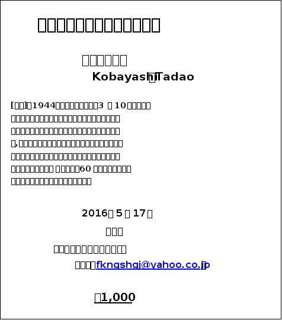

| 「ショウコウ」と仇名されて: 少年Ｎと哲学人Ｋの書簡 | |
| 小林尹夫 | |
| jinminbungakusaito (2016) | |
|
「ショウコウ」と仇名されて ～少年Ｎと哲学人Ｋの往復書簡～
小林尹夫
|
２０００年１１月末、氷雨が降りしきる、いかにも寒く暗い日の夕暮時、浦和の街外れにあったＫの住いに一通の封書が届けられた。知り合いの出版社から送られて来たものであった。そこに一通の手紙が同封されていた。差出人住所は「東京都新宿区××町２‐３‐４‐１０５号」とあった。名前は伏せるが、その筆跡から見て、この手紙がまだ年若い少年からのものであることが窺い知れた。（小林）
〈少年Ｎの手紙 №１〉
自分を殺すか、人を殺すか。
僕は迷っています。しかし、いつまでも迷いの中にいることはできません。限界が近づいています。そろそろ答えを出さねばなりません。後１ヵ月、誕生日の１２月２５日までが残された時間です。
答えを出すこと、その答えがもたらす結末が恐ろしいものだということはよく分かっています。しかし、人を殺すのも自分を殺すのもどちらにしても変わりはなく、同じような気もします。言うまでもなく、僕は冷静です。決して気が狂っているわけではありません。間もなく１７歳になる高校１年生、男子、特別有能ではありませんが低能でもありません。
今、僕が一番知りたいのは「何が正義なのか」ということです。それが知りたいのです。偶然、ある雑誌に掲載されていたＫ先生の「オウム真理教を信じた我が友Ｈへ」の中の「かつてＨは熱い正義の人であった」という一文を目にし、直感的に「求める答えがここにある」と確信しました。先生ならきっと僕の疑問に真正面から答えてくれるはずとの期待を抱き、この手紙を書いています。
少年Ｎの手紙は冒頭から切羽詰まった調子に彩られていた。彼がＫに手紙を書き送ることになった切掛けは、武蔵野哲学書院発行の雑誌『唯物論探求』の２０００年５月号に載ったＫの投稿文を、或る書店で偶然目にしたことにあったようだ。「オウム真理教を信じた我が友Ｈへ」と題したその一文は、Ｋの旧友で雑誌編集長のＭが、多少なりとも原稿料が入ればという配慮から、に書かせてくれたものであった。
その一文で、Ｋはこんな風なことを書いていた。「オウム真理教に入信し、地下鉄サリン事件において重要な役割を果たしたＨは、かつて我が友であり、かつては熱い正義の人であった。...結局、彼と私の分岐点は観念論と唯物論のいずれの道をいくのかという点にあった」と。「哲学人」を自称するＫは、近頃は地域の公衆衛生に関わる仕事をしながら哲学の研究と実践に力を注ぎ、時々雑誌に論文を発表していた。その論文は、最近、一部の人々に注目されるようになりつつあった。
少年Ｎが抱いた最大の関心事は「Ｈは熱い正義の人であった」というこの一言にあったようだ。（小林）
〈少年Ｎの手紙 №１続き〉
僕が抱えている問題について書きます。
僕は都内の或る私立Ｓ男子高の１年生です。それほど有名な高校ではありませんが、ここの特別進学クラスだけは最近目覚ましい難関大学合格実績を上げているということで注目を集め始めています。Ｄ校長は「私立高校サバイバル戦に生き残らねば！」と、一流大学への合格率を上げるため、死に物狂いで教師や生徒の尻叩きをしています。今、僕はこの学校で酷いイジメにあっています。切掛けは入学式の日に、クラス担任のＹが、順番に生徒の名前を声に出して読んだ際、僕の名前「○○」を、笑いを浮かべながら、声高に「ショウコウ」と読み上げたことが切掛けでした。
すぐに誰かが「ショウコウ！ショウコウ！アサハラショウコウ！」とはやし立て、クラス全体が大笑いとなり、Ｙもまた面白がって、再度、名字の後に「ショウコウ君」と続け、しかもことさらに大きな声で読み上げたのです。
確かに僕の名前（漢字）の本名読みは難しく、普通には「ショウコウ」と読みがちで、初めての場合は仕方のないことでもありました。
しかし、偶々この時はオウム真理教教祖アサハラショウコウの裁判が進行中で、しかも２週間ほど前の３月２０日はサリン事件５年目に当り、当時、テレビは地下鉄サリン事件や教祖逮捕劇の映像と共に、選挙活動で教団信者が「ショウコウ！ショウコウ！」と繰り返し踊る姿を何度も何度も流していた時でした。
高１の入学したてのクラスは互いに見知らぬ者同士の集まりです。皆、なんでも良い、とにかく共通の話題、共通の言語が欲しかったのです。僕はそのまま「ショウコウ」と仇名され、或る者は僕の目の前でショウコウ踊りの真似をし、クラス仲間の拍手喝さいを浴びていました。
僕にとってはおぞましい、やりきれない出来事でした。「これで君は有名人になれたね」と、羨ましげに声を掛けて来た級友もいました。僕にとってはとんでもないことで、実に不愉快な気持ちで、仇名で呼ばれるたびに怒り、強く本名を言い返しました。しかし、僕が不愉快な顔を見せれば見せるほど級友たちは面白がり、ますます大声で仇名を呼びました。僕は抵抗を諦め、出来る限り無視し、仇名で呼ばれても答えないことにしました。結局僕はクラスから孤立し、無言で過ごすことが多くなっていきました。
Ｋが雑誌にオウム真理教に関する一文を書いたのは、サリン事件から５年目を迎えた今年の３月のことであった。当時、テレビを始めマスコミ各社は「若い優秀な頭脳がオウムに惹きつけられた理由は何か？」「オウム真理教・サリン事件とは何であったのか？」とのテーマを掲げ、盛んに事件の詳細を報じていた。確かに、テレビ画面には醜いとしか言いようのない「ショウコウ踊り」の映像が繰り返し流されていた。だが、事件から５年目のこの頃、既に若い世代の間ではオウムの事件は風化しつつあり、「オウム復活の危険」すら取りざたされていた。結局、何故という問いに答える報道はなく、「事件を風化させるな！恐ろしい事件の生々しい記憶を取り戻そう！」との掛け声のもと、マスコミは実におぞましい映像を大量に流し続けていたのである。（小林）
〈少年Ｎの手紙 №１続き〉
本格的なイジメが始まったのは、入学から２カ月がたった５月末のことです。
発端は日本史の授業でした。「進学指導のプロ」と生徒の間で評判だったＧ先生が、先月の授業の復習として、Ａに「新嘗祭」の読み方と意味を質問したところ、学年トップで入学したＡがグッと詰まり、「知りません」と答えると、Ｇ先生は「知りませんではないだろう！忘れたと言え！」と厳しく叱責しました。
Ａの授業態度はどこか不貞腐れたところがあり、普段からＧ先生は快く思っていないようでした。その日は、先生の方にも何か面白くないことがあったのか、いつもよりかなり厳しい叱責でした。学校生活に狎れてきて緩みがちになっていた生徒の授業態度に喝を入れようとしたのかも知れません。
それで終われば問題はなかったのですが、Ｇ先生は僕を指名しました。僕は歴史教科が好きで、関連資料も読んでいたので、スラスラと答えることが出来ました。先生にはそれが意外だったようで、僕のことをべた褒めした後で、「Ａ、君のような態度だとロクでもない大学にしか入れないぞ。彼を見習え。とにかく皆たるんでいる。頭を冷やして考えろ！」という捨て台詞を残し、終業を知らせるベルが鳴る前に、荒々しく教室の扉を開け、出て行ってしまったのです。
Ａのプライドが著しく傷つけられたことは言うまでもありません。Ａの陰湿な嫌がらせが始まったのは、このことがあった直後からです。
その数日後、玄関横のロッカールームにあった僕のロッカーの扉いっぱいに、大きく黒いマジックで「ショウコウ」と落書きがされていました。それを見た瞬間、戦慄が走り、背筋がぞくっとしました。勿論「犯人」は分からずじまいでした。
これを機に４、５人の生徒が不愉快な言動を僕に対してとるようになってきました。昼休み、気の弱そうな小柄な級友Ｆが突然自分の方から僕にぶつかって来たので、思わず「何をする！」と怒鳴ると、彼はわざと自からコケ、「何だよ！オレが何をしたって言うんだよ！暴力振るっていいのかよ！」と大声で叫んだのです。するとすぐに彼の仲間が寄って来て僕を取り囲み、「ショウコウが暴力振るった！怖いぞ、ショウコウ！ショウコウ、怖い！」と囃し立てました。彼らに囲まれ、僕は恐怖に足がすくんでしまいました。勿論周りの者はみんな無視です。関わりたくない、面倒なことに巻き込まれたくなかったのです。が、この時、僕は彼らの後ろで身じろぎもせずに立っていたＡの恐ろしい程冷たい目と無表情の顔を見た時、彼こそがこの嫌がらせとイジメの本当のリーダーであることを直感しました。
次に起ったことは、例のぶつかって来た級友Ｆのロッカーの運動靴が、鋭利な、カッタ―ナイフのようなもので切り刻まれるという事件でした。
彼らが大騒ぎを始め、当日、学校は持ち物検査を行い、犯人捜しを始めたところ、どういう訳か、僕のサブバッグから、見たこともない大型のカッタ―ナイフが出て来たのです。
すると、いつもの連中、Ｆとその仲間たちが僕を取り囲み、「犯人はショウコウ！恐いぞ、ショウコウ！恐いぞ、オウム！」と卑しい目を光らせ、狂ったように踊り出したのです。その先頭に立っていたのは、何かと悪い噂のある生徒で、腕力自慢の男でした。
僕がいくら大声で、「違う、このナイフは僕のではない！」と叫び、周囲に「僕がこんなもの持っているところ、皆、見たことないだろう？」と問いかけても、全員が関わり合いを恐れてサッと離れて行きました。
生活指導主事の教師がやって来た時には、僕一人だけが残されていて、彼はカッタ―ナイフの刃の裏で僕の頭をコツンと叩き、「こんな物騒なもの、２度と学校に持って来るな！」と叱り付け、そそくさと引き上げて行きました。彼は事件について何も問おうとしませんでした。教師も面倒なことを早く終わらせたかったのでしょう。その後も学校から呼び出されることはありませんでした。
「僕のものではない、誰かが僕の目を盗んで放り込んだのだ」と、担任のＹに訴えたのですが、「お前のものではないかもしれないが、しかし、あんなものを入れられたお前も不注意だった。もはや、何を言っても水掛け論になるだけだ。今後、やられないように注意しろ。担当の主事には俺の方からちゃんと言っておく」だけで終わりでした。彼にもこんな問題にいつまでも関わっていたくないと思っている様子がありありと見えました。
今も、Ｓ高の校舎の至る所に、「目指せ、国立・早慶！」「臥薪嘗胆、粉骨砕身！」「一刻千金、一心不乱！」「優勝劣敗、敵者生存！」といったような嫌なスローガンを書き入れたポスターが貼られており、職員室には「私立高のサバイバル戦に勝ち抜き、生き残り、更にわがＳ高の名を挙げよう！」と大書した看板が掲げられています。何となく重苦しく息苦しい空気が学校中に漂っています。
この事件以後、僕はクラスで完全に除け者にされただけでなく、特別クラス以外のまったく見知らぬ連中からも白い目で見られるようになり、ひそひそ声で「あいつ、オウムの信者らしいぞ」とか、「サリン事件の悪口言うとナイフを振り回すらしいぞ」等と囁く声が耳に入ってくるようになりました。
クラスのイジメグループが僕にした仕打ちはここに書くも厭わしいことばかりで、やりもやったりというような馬鹿げたことばかりです。背後にＡがいることは疑いようもない事実なのですが、彼は決してそれを周囲に悟られることの無いよう上手く立ち回っていて、学校側はまったく気づいていません。尤も、気づこうともしていませんが。級友も、他のクラスのものも皆、見て見ぬふりを決め込み、ひたすら平穏無事を決め込んでいます。
僕は学校では平静を装っていますが、耐え難い不快感、恐怖感、嫌悪感が交互に湧き上がり、当然授業にも集中出来なくなり、成績はガタ落ちに落ち、定期的に行なわれる月末テストもたちまちトップグループから転落してしまい、今は勉強などまったくやる気になれません。
僕は孤独が怖いのではありません。そうではなく恰も僕がそこに存在していないかの如く無視されるのが耐えられないのです。皆から、あたかもそこに存在していないかのように扱われることが、どれほど自尊心と人間としての誇りを傷つけるものであるか、経験した者にしか判らないでしょう。
そして、今では、Ａと級友たち、学校に対する憎悪が頂点に達しようとしており、怒りが腹の底からメラメラと燃え上がって来るのです。Ａを殺すか、自分が死ぬか、学校を爆破し皆殺しにするか、もはやこのいずれかを選ぶほかない、とさえ思えます。自らが死ぬことによって復讐するか、憎悪の対象を殺すことによって復讐を遂げるか、そのいずれかの道しかない、と。
つい先日までは、全てに絶望し、復讐だけを考えていました。そんな時、偶然に先生の「オウム真理教を信じた我が友Ｈへ」と題した一文を読んだのです。
「オウム真理教に入信し、地下鉄サリン事件において重要な役割を果たしたＨは、かつて我が友であり、かつては熱い正義の人であった」という一文を読み、僕はいきなり体中がカッーと燃え上がったような衝撃を覚えました。
「人を殺してはいけない」と思いつつも、「殺されて当たり前の人間もいる」「殺すことが正義である場合もあるのではないか」という別な思いが絶えず湧きあがって来て、暗い泥沼の底に澱のように淀んでいたその問いが、いきなり水面を突き破って表に噴出し、しばしば僕を恐ろしい妄想に誘いました。
「ショウコウ」と仇名され、いじめられているからといって、僕がオウム真理教に好意を抱いているということではありません。オウム教徒の「ポア」の考えも理解できません。しかし、「正義」の名において「サリン事件」を引き起こした、そこに至る思考がどんなものか、どんなものであったのか、それをぜひ知りたいと思うようになりました。
「オウム真理教を信じた我が友Ｈへ」という短い文章を読んだだけではよく判らず、こうして手紙を出させていただきました。ご無礼をお許し下さい。
２０００年１１月２２日
彼の手紙を読み終わって、Ｋはフッと手紙を回送して寄こした編集長Ｍが封書に表書きした住所部分に目をやった。Ｋの目は「浦和市桜区新開」の「新開」の文字に釘づけになった。「新開」、普通は誰しも「シンカイ」と読むであろう。ちょっとひねって読んで「ニイカイ」だろうか。しかし、「新開」の当地の読みは「シビラキ」である。勿論、初めてこの地を訪れた時のＫも「シンカイ」と読み、この古いマンションの一室を譲ってくれた友に会心の笑みを漏らさせたことである。「新開」を「シビラキ」と読まず、「シンカイ」と読むことは、或る意味では当然のことといえた。
まさに、少年の本名の漢字名前「○○」もまた、「ショウコウ」と読めるような名前であった。それはごくありふれた、当然起こりうるような読み間違いであった。とは言え、まったく偶然に起こったことと言い切ることはできない。何故なら、彼の本名の漢字名前は「ショウコウ」という読み方以外の読みも可能であり、直ぐに１，２他の読み方も浮かばないわけではないからだ。しかし、Ｙ先生は笑いながら、つまり意識的に「ショウコウ」と声を張り上げた。きっと、当時話題となっていた「アサハラショウコウ」の名前が頭をよぎっていたはずである。勿論、そう呼ぶことがその後どんな風な問題を引き起こすことになるか、そこまで考えは及んでいなかったであろうが。
今の時代、いじめは実に些細な、偶然的な事から始まる。いつ何時、どんなことが切掛けになっていじめが始まるか判らず、子供たちは日々戦々恐々たる状況に置かれている。しかし、それは見方を変えれば、それほどいじめを引き起こす強力な要素・要因が今日の社会・人間集団の中に日常的に濃厚に存在しているということを意味しているといえよう。（小林）
〈哲学人Ｋの手紙 №１〉
「正義とは何ぞや」―これは哲学上の一大問題です。簡単に一言で語ることはできません。とりあえず、しばらくは「自分を殺すか、人を殺すか」という問題は脇に置いて、この大問題について、私と一緒に考えてみましょう。
Ｎ君が今抱いている怒りは決して故なきものではありません。戦前に治安維持法違反で検挙・投獄され、敗戦直前に獄死した哲学者・三木清は「怒りは正義に発する」という言葉を残しています。怒りと正義は表裏一体のものです。このことを忘れないで下さい。
さて、何から、何処から始めるべきか、いろいろ考えた末、Ｎ君が関心を抱いたという「我が友にしてサリン事件に関わったオウム真理教信者・Ｈ」に関する話から始めることにしました。この問題を追究することはまた、君の直面している問題の解明に繋がっているからです。
私の回答はかなり長くなりますので、幾つかに分けて送ります。君も、私の手紙に関係なく、必要に応じて、思っていること、考えたことをぜひ書き送って下さい。出来る限り、君のこと、君を取り巻く環境・状況のこと等々を知りたいからです。特に、学校のこと、友達のこと、家庭内のことなど、差し障りの無い範囲で教えて下さい。勿論、常にそれは君が私に寄せる信頼の度合いが決めることであり、すべて君の判断次第です。
１９９８年５月２６日、東京地裁はオウム真理教サリン事件の殺人容疑者である林郁夫に無期懲役の判決を下しました。東北のある地方紙のコラムは、次のような感想を記しています。『なぜ未曾有の無差別テロや数々の殺人事件を起こしたのか。未だに、肝心の人が何も語らないままである。松本サリン、地下鉄サリン、坂本弁護士一家殺害などの犯行を繰り返し、合わせて２７人の命を奪ったオウム真理教。その教祖だった松本智津夫被告は肝腎のことを何も語っていない。松本被告は弟子に罪をなすりつけ、自らの責任については依然として沈黙したままである。真相が解明されないまま結末を迎えたとしたら、犠牲者の遺族らはどんな気分であろうか。ポア（殺生）しても、殺された人は教祖によって高い世界に転生させられる。ポアするのはいいこと、功徳だ。殺人を正当化する、こんなとんでもない教えに、なぜ高学歴の優秀な人たちが染まり、人殺しまでしたのか。林容疑者は裁判に協力的ではあったが、その疑問は残ったままである。そう言えば、対テロの名の下なら、戦争も罪のない人々の犠牲も仕方がない、というような昨今の空気も何か異様だ。それこそ常識がマヒし始めているのではないか』と。
核心を突いた誰もが持つ疑問です。ところで、この「高学歴の彼らは何故〝ポア〟という殺人を正当化したのか」という問いは、「真の正義とは何ぞや」という問いに帰着します。そして、それは「戦争における正義とは何ぞや」という問題にも帰着します。そうです。君が抱いた「正義とは何ぞや」という問いや東北のあるコラムニストが発した「オウムの正義とは何か」という問いは「戦争における正義とは何か」という問いと同じものなのです。
そして、私とＨとがその生き方を異ならせることになったそもそもの違いも、この問題に深く関わっていました。それは、あまりにも大きな問題で、雑誌の小さなコラム欄では到底語りつくせるものでなく、示唆するだけに終わらざるを得ませんでした。ただ、その時、友人の雑誌編集長Ｍと、いずれオウム真理教とサリン事件に関する詳しい報道や当事者の手記が大量に出版されるであろうから、それらを踏まえ、一度本格的に論じることにしよう、との約束を交わしました。実際に、２、３年前からかなりの関係資料・出版物が世に出され、私自身も執筆の準備を始めつつあります。
良い機会ですので、出来る限り判り易い形で、私の考えを書いてみます。君の意見もぜひ聞いてみたい。そして、この手紙の不足不十分を克服し、若い青年、現代の少年少女諸君にとって、十分価値ある読み物となるよう、心掛けたいと思います。どうか、遠慮なく、率直な意見を聞かせて下さい。
１９９５年（平成７年）３月２０日午前８時少し前、首都東京の政治的中枢千代田区霞ヶ関に繋がる「地下鉄霞ヶ関駅」に向かう出勤時の日比谷線、千代田線、丸の内線の車内で、猛毒サリンがばら撒かれ、死者１１人・被害者５５００人余に及ぶ大惨事が発生しました。この時、実行犯の一人として千代田線に乗り、車中でサリンの入ったビニール袋にカサの先を突き刺した人物こそ、「我が友にしてサリン事件に関わったオウム真理教信者・Ｈ」、即ちオウム真理教治療省大臣・医師林郁夫（４８歳）でした。
林は昭和２１年（１９４６年）１月に、私は昭和２１年２月に、同じ空襲下の東京に生まれています。ただ、生まれたばかりの私は、徴用に駆り出されていた父が体を悪くして亡くなっていたこともあり、終戦直前に、笹塚の家を去り、母と兄と祖母との４人で、母の実家のあった信州松本へ疎開しました。その後、事情があり、東京がすこし落ち着いて来たというので、また元住んでいた笹塚界隈に戻って来ました。私が小学校４年の時のことです。区立Ｓ小学校で僕と林はクラスメイトになりました。林は、父親が医師、母親も薬剤師という開業医一家の６人兄弟の５番目の子で、彼の兄姉は皆、公立の小学校を卒業後、慶応中学から慶応高校、慶応大学医学部へ進むという典型的なエリートコースを歩み、医師となっています。彼もまた、中学、高校、大学と私立の慶応義塾に通いましたから、大学までずっと公立に通った私とはそれほど親しい仲になることはなかったのですが、小学校時代には同じクラスで席次争いを演じたこともあり、二人とも常に意識し合っていて、お互いに関心を持っていました。ただ、二人とも大学は違っていても同じ医学部の学生、林は外科、私は公衆衛生科の学生であり、１９６０年代半ばに起こった全国的な大学闘争の最盛期には、あれこれの問題について互いに口角泡を飛ばして論争することもありました。
次回、その論争について触れ、私の考えを述べることにします。林は逮捕後、自分の罪を深く悔い、自らの人生を省みた懺悔録とも言うべき雑記を著しています。未完成文ですが、二人の共通の友人Ｌが、その一部を僕に見せてくれました。彼はその中で自らの生い立ちと、オウムを信じ、罪を犯すに至った経過を赤裸々に告白しています。もっとも、その中には僕との交流の記述はまったくありません。いずれ、何らかの形で公刊されることになるでしょうが、予め、内部的な資料となっているその雑記を元にこの手紙を書いていることを伝えておきます。
２０００年１１月３０日
Ｋは、林の書いた伝記的懺悔録を読んだ時、直ぐに、彼が自分と心理的にそう遠く離れて存在していた訳ではなかったことに気付き、戦慄を覚えた。少し状況が変わっていれば、自分も又「オウムの徒」となり、「犯罪者」になっていたかも知れないのだ、と。
林はこの自己省察記で、己がオウムの信者になり、事件を起こすに至った事実経過を克明に記していた。だが、何故そうしたのか、何故そうなってしまったのかという、本当の理由・原因については無自覚であり、何処で道を間違えたのかについては、十分な分析は見られなかった。それは、彼がＫとの論争を忘れていて一顧だにしていないことと無関係ではなかった。彼の記憶の中には、Ｋと交わした哲学的論争の一かけらも残っていなかったようで、二人のその後の生き方を決定的に異ならせた「分岐点」に関する記述は陰も形も見られなかった。Ｋは、いつかは彼に自分の思いを知らせ、根源的な原点に立ち返ってその歪み倒錯した歩みを振り返ってみるよう伝えたい、否、伝えなければならない、そう思っていた。（小林）
〈少年Ｎの手紙 №２〉
突然の手紙にお返事下さり、本当にありがとうございます。ほっとして何故か涙が零れて止まりませんでした。命が、否もっと深いもの、生物的な命ではなく人間としての存在そのものが救われた感じがしています。先生は、今年の５月に連続して起こった「１７歳の殺人事件」―佐賀のバス放火殺人事件、愛知の少年が「人を殺す経験がしたかった」と言って起こした主婦刺殺殺害事件、岡山の少年が起こした金属バットによる野球部の後輩殴打・母親殴打殺害事件をご存じと思います。同じような年代の僕にとって、彼らは決して遠い存在ではありません。世間の人々、マスコミは「生まれつきの変人・変態者の仕業」「精神・神経の病の結果」「アスペルガー症候群患者の犯罪」と書き立て、何か突然変異的に発生した事件であるかの様に言いはやしていますが、あまりにも単純な見方に憤りを禁じ得ません。特に佐賀バス放火事件の背後には学校のイジメ問題があり、僕は到底他人ごとには思えませんでした。先日ある雑誌で、佐賀事件を起こした少年が、ネットの２ちゃんねるで「匿名の無責任で悪意ある人物たち」とのやりとりを頻繁にした結果、ますます人間不信を強め、日常感覚を狂わせ、疑心暗鬼を募らせ、世の中に対する恐怖と憎悪に支配されていったとの記事を読み、ちょうど同じ様な状況にあった僕は、慌ててサーバー契約を打ち切り、パソコンを使えないようにしたことです。
辛うじて今僕の暴走を止めているのは母の存在です。僕の亡くなった父は中規模の医療器具メーカーの勤め人で、４つ年下の母も同じ会社で働いていたそうです。二人とも高卒です。平凡で家族思いだった父は、僕が３歳の時にガンで亡くなりました。３３歳でした。業績が傾いていた会社の開発部にいた父は自分の病気のことを隠し、不眠不休で仕事に打ち込んでいたそうでほとんど自殺に等しかったそうです。母はそれについて零すこともありましたが、今では、如何にもお父さんらしい人生だったと、笑いながら話しています。父が亡くなった直後、会社が倒産し、一家はたちまち路頭に迷うことになってしまいました。母は何とか遣り繰りしながら介護ヘルパーの資格を取り、近くの老人ホームに勤めながら今日まで僕を育ててくれました。重労働のようで、その上長時間勤務が続き、傍目にも大変な職場ですが、母はお年寄りの嬉しそうな顔を見れば疲れも吹っ飛ぶと言い、朝昼晩と休みなく働いています。
勿論母は僕がイジメに合っていることなど知りません。そんな話に付き合っているような暇もありませんし、手を打つといっても精々担任に相談する位のことで、そんなことをしてもただ問題をこじらせるだけで、実際には何の解決にもならないことは目に見えているからです。もし親に相談したらイジメが本当に無くなるのなら、皆そうするであろうし、とっくの昔にイジメ問題など解決しているはずです。何をしてもイジメは簡単には無くならない、皆そう考えているはずです。先生のお考えはどうなのでしょうか？
２０００年１２月８日
Ｋは、Ｎの母親が困難な状況下に置かれながらも労働者として極めて健全な感覚を持っていることを知り、心からの安堵を覚えた。おそらく彼女は、亡くなった夫の自殺行為に近かった仕事への打ち込み方に疑問を持っていたであろうが、今はその男らしい生き方を誇らしくも思っているのだろう。Ｎもまた、この母の存在を重く受け止めており、Ｋは、このＮならこれから自分が語ろうとする哲学を必ず理解できるはず、と確信することができた。
母子家庭の多くの場合、母親は食うための仕事に追われ、やむなく子供のこと等は放りっぱなしにせざるを得ないのが現状である。親から見離されたと錯覚し、孤独に陥った少年少女が，寂しさに耐えきれず、遊び仲間とつるみ、非行へと走る、そんなケースは決して少なくない。だが、そうした家庭環境もまたその時々の社会的産物であり、そこに社会的矛盾が反映している。学校環境もイジメの問題も全く同様であり、すべてがその時々の社会的産物であり、そこに社会的矛盾が反映しているのである。（小林）
〈哲学人Ｋの手紙 №２〉
君のお母さんは介護施設で朝から夜中まで、寝る暇もなく働いているとのこと。お母さんを大事にしてやって下さい。「働く」ということは家庭や家族にとって大きな意義を持っているだけでなく、世の中全体から見ても、非常に大きな意義を持っています。正義という問題を考える場合にもこの「働く」（労働）ということの意義を抜きにしては何も語ることはできない、というのが私の見解です。
学校のその後はどうですか？「沈黙こそ最大の迫害である」という言葉があります。耐え難い事態であれば、すぐに連絡して下さい。私が必要な行動を起こします。イジメについてはいずれ詳しく論じることにします。
さて、私と林が決定的に対立した「論争」の話から始めましょう。
それは１９６７年の夏休み中のことで、Ｌの下宿先でのことでした。彼は二人の小学校時代の共通の友人で、Ｈ大の法学部に籍を置いていたＬが、当時各地で巻き起こっていた学園闘争「全共闘運動」について話し合いたいということで、数人の仲間を集め、意見交換をすることになったのです。当時、どこの大学もストと学園封鎖の真っただ中にあり、それぞれ学生たちは新学期が明けたらどうするか、態度表明を迫られていました。学園闘争の出発は「学費値上げ」「学生会館管理規則」「カリキュラム編成」など学内問題が中心でしたが、同時に「大学・学生の社会的役割」という問題が真剣に論じられるようになっていて、その日も話題がそこに収れんされていきました。議論の中心になったのは「公害問題」でした。
丁度１ヶ月程前、新潟水俣病第１次訴訟が始まり、水俣でも公害認定を要求する市民運動の機運が高まりつつあった頃で、公害問題は学生にとって見過ごすこの出来ない重大な社会的事件となっていました。いつの間にか、医学部学生であった私と林とがこの議論の中心になり、論争を展開していました。
Ｌの下宿は都電荒川線の面影橋停車場の近くにあり、６畳の部屋の南窓が神田川に面し、時折涼やかな風が吹き抜け、論争に熱くなっている若き一群の頭を冷やしてくれました。
私も林も、公害問題が深刻な社会的矛盾であり、「人類社会において加速度的に進むこうした環境汚染や環境破壊をいかにすべきか、真剣に対処しなければならない」という点ではまったく異なることなく、完全に一致していました。異なっていたのは、その対処の仕方であり、その根底には、こうした事件に対する基本認識における根本的な相異があったのです。
２人の論争の切掛けとなったのは、Ｌが持っていた週刊誌に掲載された２枚の白黒の写真でした。ある週刊誌記者が、水俣現地で映画撮影中の土本典昭監督を取材した際に撮ったもので、１枚は監督の横に１人の「笑う少女」が写っている写真で、もう１枚は手首の関節が９０度以上も曲がりくねり、指は不揃いの鉤のように折れ曲がっていて、見るからに痛々しい水俣病患者の手の写真でした。１０歳くらいの少女の口元も頬も苦しげに歪み、白い目は大きく見開かれ、写真説明に「笑っている...」という文字が無ければ、とても「笑っている」顔とは見えないものでした。私も林も、衝撃とショックで、しばらく声を出すことが出来ませんでした。
「水俣公害問題」について、概略を説明しておきましょう。恐らく、君たちのような若い世代は、今でも時々「水俣公害補償問題」として新聞報道に取り上げられることがあるとは言え、「昔々にあったこと」として教科書に数行載せられている程度の説明を聞くだけで、ほとんど知らないままに終わっていることでしょう。
１９５９年１１月２日、水俣の漁民・市民が新日本窒素水俣工場（日本チッソ）に乱入し、警官隊と衝突し、多くの逮捕者が出て、ようやくこの問題の存在が世に広く知られることになりました。水俣では、１９５０年代半ば、水俣湾の魚を食べている者たちの中から手足の感覚が無い、まともに歩けない、視野が狭くなった、うまくしゃべれない、痙攣が起こり意識不明になって倒れるなどの症状を訴える人が次々に生まれていました。海辺にはあちこちに野良猫の死体が転がり、妊婦からは胎内奇形児が生まれ、何人もの罹病者が「原因不明」の死を遂げ、何人かの住民がこの奇病故の差別偏見に苦しみ自殺を遂げていました。まさにそこに起こっていたことは「毒殺殺人事件」だったのです。
地元の漁民と地元の医療関係者は早くから、チッソ工場が水俣湾に垂れ流しにしている工場廃液に含まれる有機水銀こそが奇病の原因と指摘し、チッソ工場に改善と対策を申し込んでいました。が、チッソ経営陣は頑として水銀中毒説を認めず、逆に水俣漁民に対して「営業妨害」との誹謗中傷を加えていました。また、担当機関たる厚生省の役人は「中立」を装って責任回避を図り、中央の多くの医学研究機関・衛生保健機関の研究者もまた「科学的因果関係が証明されない」とし、経営側を支持し、その責任を不問に付していました。当時の岸内閣、政府、与党政治家たちもこの水俣漁民と市民の塗炭の苦しみを無視し、チッソ経営側に立ち、あくまでもその因果関係は不明とし、緊喫に必要な対策を怠っていました。野党陣営も、この問題を当時大きくなりつつあった安保闘争と結び付けて闘うのではなく、逆に陰に追いやってしまいました。こうした中で水俣漁民・市民はやむにやまれず、１９５９年１１月２日、遂に実力行使に踏み切ったのです。それからまた幾多の闘いが繰り広げられ、９年経った１９６８年、厚生省はようやく「水俣病の原因はチッソ工場の排排水に含まれるメチル水銀である」ことを認めるのですが、私たちが論争をしていた１９６７年夏当時は、まだ「水俣病と窒素排水との因果関係は認められない」とする臨床的・薬学的見解が大きく取り上げられており、われわれ若き医学生の憤激の的となっていました。
勿論、こうした環境破壊は水俣だけで進んでいたわけではありません。１９６０年代に入ると、東京では光化学スモッグが頻発し、スモン・サリドマイド薬禍問題やカネミ油症・ＰＣＢ食品公害問題が顕在化し、さらに富山のイタイイタイ病、阿賀野川水銀中毒問題が取り沙汰され、四日市では喘息患者が大気汚染の責任追及に立ち上がっていました。日本中至るところの海や河、森や林、小川や湖、田や畑、空気や食べ物が汚染され、環境破壊は凄まじい勢いで進行し、企業・国のみならず、科学技術者・医者の責任が鋭く問われていたのです。林も私もこうした「科学技術者・医者の無責任」「自然環境の破壊と荒廃」に心を痛めていたのであり、この点においては完全に一致していたのです。
「一体、チッソの経営者や厚生省の役人や医者達の脳みそはどうなってしまっているのだ。我欲と独善の塊ではないか。いくら何でもひど過ぎる。この世地獄そのものではないか！」
林は声を震わせて言いました。
「金儲け、企業の存続をすべてに優先して来た結果がこれだ。高度経済成長の負の世界を今こそ問題にしなければならないのだ。」
私は、彼との考え方の違いを念頭に、そう答えました。
「まったく悪魔の仕業だ。正義の一かけらもない。とても人間業とは思えない。許しがたいことだ。」
彼ははき捨てるように言いました。
「スモン薬害も、カネミ油症も、四日市石油公害も、富山イタイイタイ病も皆同じだ。根本にメスを入れないとモグラ叩きに終わってしまう。」
私は「根本」という言葉に力をいれて言いました。勿論、私も公害企業に対して怒りを覚えていましたが、一方では冷静に考えねばならないとも思っていました。それで、雑誌記事にしばしば〝企業城下町〟という言葉が登場していたので、それに関する話をしました。当時、水俣の町全体がチッソという一つの企業の存在によって成り立っていて、町民の大半がこの企業と何らかの関わりを持ち、町の税収の大半がこの企業に負っており、市政も市議会も市商工会もそれに牛耳られていて、うっかりチッソの不利になるようなことや悪口は口に出して言えないという雰囲気に取り囲まれている、ということが報道されていました。
「企業城下町でも何でも良いが、もし企業家や町長が人間としての良心をもっていれば、こんなことにはならないはずだ。特に、科学者たる医者や厚生省の医務担当官の責任は重大だ。彼らには正義心というものが無いのか。同じ医学者として許せない、そうだろう？」
林は私に同意を求めました。
「いや、単純に、正義心や良心さえあれば...ということでは解決つかないだろう。何故こんなに次々と公害が発生するのか、また何故に企業も厚生省担当官も真剣にこの問題に取り組み、解決方法を探ろうとしないのか、何故に彼らの正義心と良心は麻痺してしまっているのか、もっと根本的な因って来たる原因を探る必要があるように思うのだ。問題は、人間の良心をそこまで麻痺させてしまう世の中の在り方、社会の仕組みだ。個人の良心を問うことと社会の仕組みの問題点を問うこととが、一つのものとして、一体不可分のものとして追及されるべきだ。」
そう主張する私の脳裡には、当時見たテレビのあるドキュメンタリー番組の一シーンが浮かんでいました。水俣病を引き起こしたチッソ工場の労働者たちが、テレビレポーターの追求を避け、顔を隠し、逃げるように工場の中に走りこんでいくシーンでした。カメラから顔を隠し、逃げる...勿論それは良心が痛んでいるからです。耐え難い思いがあるからです。そうまでして彼らが「守らねば」ならないものとは何か。それは「家族の生活」なのです。チッソ水俣の御用労働組合は、会社側と一体になり、「工場排水原因説」を否定していました。公然と会社側を批判するようなことを言えば、「クビだ！」という脅しが単なる脅しで終わらないことを、彼らよく知っていたのです。企業で働いている労働者でもない、ごく普通の大学生でしかなかった私が何故そんなことに考え及んだのか、それは疎開先の田舎で、それに類する出来ごとを身近で見聞きしていたからです。疎開先の母の実家は１０人家族の小農でしたから、我が家には耕す土地は何もありませんでした。それで、母は近所の農家の手伝い仕事をしながら、村役の下働きのようなことをして収入を得ていました。毎年、年度末の３月に役員の改選があるのですが、その都度、母は言葉に言い表せないような屈辱を味わわねばなりませんでした。新役員の酒の席に呼び出され、「今の仕事を続けたければ...」という脅しを加えられ、理不尽な扱いを受けねばならなかったのです。「仕事を続け、家族の生活を守らねば」という思いで、時にはご機嫌取りをし、必死に耐え難い辱めを乗り切らねばならなかったのです。結局、母はそんな暮らしに耐えられず、戦時中も東京に残って戦火を潜り抜けた友人の助けを得て、再び上京し、土木建設会社の賄い婦の職に就いて一家の生活を守り抜いたのです。
仕事で得られる僅かばかりの収入で家族を養っている貧しい勤労者にとって、特に、己を守ってくれる仲間や組織が周囲に無い時、仕事を失うようなリスクのある行動は、そう簡単には取れるものではありません。時には、良心が痛んでも、上（上役・雇い人）の言うことに従わざるを得ない場合もあるのです。「何でもかんでも、たとえ間違ったことでも、上の言うことは絶対で反抗は許さない」というような社会こそが問題にされるべきであって、良心云々だけの問題ではない...と、私はそんな風に考えていました。
「君は何故、人々の〝良心、正義心の弱さ〟を責めようとしないのだ。左翼の活動家の最大の弱点だ。いろいろな事情があるかも知れない。しかし、担当者に心の強さ、強靭な精神力があれば、どんな困難に直面しても、正義を貫けるはずだ。特に、社会の、公的な組織機構のトップに立つ人間は、将来そうしたトップに立つべき大学に学ぶエリートは、強靭な精神力を身につけ、その力を以って何事にも当たらねばならないではないのか。」
林は怒ったように言いました。
その後も、似たような言葉のやりとりが繰り返されましたが、やがて彼はじっと黙り込んでしまいました。私もそうでした。確かに、お互いの間に大きな隔たりがありました。しかし、その隔たりの大きさ故に沈黙したのではありません。黙り込んだのは、二人とも、多分彼も、「では、自分自身はこれからどうするのか」という、決定的な問題が提示されていることに気付き、たじろいでいたのです。
沈黙する皆の傍らで、ポツリとＬが呟きました。
「要するに大事なことは実践すること、行動することだ。生涯かけてやってみることだ。そうやって答えを出すほかなさそうだ...」と。
当時、学生の間では、偉そうなことを言うが何も実践せず行動せず、実際には旧い大学制度を維持することに汲々としていた多くの教授・学者に対する反発が激しく、実践すること・行動すること・闘うことが無条件に要求されていました。「口舌の徒」という批判を加えられことは、我々学生にとっては最大の恥辱だったのです。左翼、右翼、イデオロギーの違いを問わず、こうした実践的・行動的意識が強く、それが時代の風潮だったのです。後にオウムに入信し、教団幹部となっていった林を始めとするこの時代の青年・学生信者たちにも、この実践重視・行動重視という時代風潮が大きな影響を与えています。
「結局、そういうことになるな。」
皆、一斉にそう言って頷きました。
目前の大学キャンパスで起こっている激烈な運動にいかに対処していくのか、それぞれが自らの実存を賭けて選択し、態度決定し、自らの人生をかけて必要な行動をとっていくしかないのだ。それがこの日の結論でした。
林が一人先にＬの下宿を出て行き、私はその後を追いました。彼に「お互いにもう少し勉強してから、また会って話そう」と、声をかけるつもりでした。しかし、彼はもう居ませんでした。遠く面影橋の上を走り去っていく彼の姿が微かに見えました。それが、私と林が会った最後です。以後、今日に至るまで、彼と会うことはありませんでした。
「公害」をめぐる二人の意見の相違、対立の根底にあったのは、無自覚的なものでしたが、いわば哲学〈ものの見方〉の相違、対立でした。つまり、本質的に言えばそれは観念論（林の見方）と唯物論（私の見方）の相違、対立だったのです。観念論は「公害」の原因を「邪悪な人間の心・精神の在り方」に求め、したがって、その解決を「人間の心・精神の改造」に求め、主として人間教育や宗教に救いを求めます。一方、唯物論は「公害」の根本的原因を「社会の構造・仕組み」に求め、したがって、その解決を「社会の構造・仕組みの変革」に求め、主として社会変革の政治闘争・革命運動に突き進みます。両者には、根本的な考え方・意識の違い、ものの見方の違いがあります。勿論、その時はこのことに無自覚であり、それほど深く考えていたわけではなかったのですが。
観念論と唯物論―この二つの陣営の考え方の他に「中間的な考え方が存在する」との主張もありますが、結局のところそれは「誤魔化し」や「躊躇」や「不決断」が生んだ折衷的産物でしかなく、突きつめていくと、どんな考え方、立場、見解も、この二つの陣営のどちらかに集約されます。
こうした意識の違いは、その人間、林と私が育って来た環境の違いが生んだものと言えます。結論的に言えば、唯物論的な考え方は現実そのものの変革を問題にすることから、主として貧しい、困難な境遇・環境に在る人間のものの見方といえます。そして、言うまでもないことですが、そうした環境は私たちが「選んだもの」ではありませんでした。誰も自分で自分の親、生活環境、時代を選んで生まれることなど出来ません。そういう意味で、自分がこの時代にこの環境でこの親の子として生まれて来たことは、一つの「宿命」と考える外ありません。しかし、当然ながら、その運命によって形成されたものは後天的な経験・学習によって変えることが出来る、と付け加えておかねばなりませんが。
私の育った環境、私の幼少期については、既に幾分かは述べていますが、今後も必要に応じて語っていくようにしたいと思います。問題は林がどんな環境において育てられたか、どんな幼少期を送っているか、です。次の手紙では、雑記の中で彼が語っている話を参考に、この問題を考えてみることにします。私と彼の考え方、ものの見方の違いが生まれて来た環境や背景の違いについて、ぜひ知って欲しいと思います。ではまた。
２０００年１２月１５日
Ｋは、林がオウム・サリン事件の「犯行者」であると最初に聞いた時、まざまざと、学生時代にＬの下宿で繰り広げた論争を想い起こした。それは、彼がオウムの信者になったらしいという噂を聞いた時以来、ずっと心の奥底に引っかかっていたことでもあった。Ｋにとって、「環境」（存在）と「思想」（意識）の問題は、極めて重大な哲学的テーマであった。（小林）
〈少年Ｎの手紙 №３〉
僕の家庭のことは前にも書きましたが、母は相変わらず一日中休みなく働いています。が、責任ある部署についているので、それなりの給料はもらっているようで、今は多少の蓄えがあるから安心して、と言います。学歴で随分苦労させられた父の遺言だからと、母は僕の大学への進学を強く望んでいます。どちらかというと教育ママで、中学の時はレベルの高い有名塾に通わされました。しかし、僕はこれ以上母に負担をかけたくないと思っています。父が病気の所を無理して働き詰に働き、その結果命を縮めたという母の話が脳裡に焼きついており、母を同じ目に合わせたくはないからです。今の高校も、大学進学特別教室には奨学金制度があると聞き、自分で決めました。大学ももし奨学金が貰えなければ夜間に行くつもりでいます。父の跡を追いたいという気持ちと、母を喜ばせたいという気持ちから、進路は理工系を志望にしています。
僕の育った環境は、片親であったことを除けばごく普通の家庭だと思います。僕自身は、父が居ないことをそれほど意識しないで育って来ました。
先生の育った環境は凄いと、びっくりさせられました。林郁夫、この人の育った環境がどんなものか、非常に興味があります。幼少年期の環境はその後の人生に大きな影響を与えていくものなのですね。次回の手紙を楽しみにしています。
学校の方は相変わらずですが、僕は無視されることも孤立させられていることも平気になりつつありますのでご心配なく。１７歳の誕生日を迎えましたが、もうあの切羽詰まった気持ちから抜け出しています。先生のおかげです。ありがとうございました。
２０００年１２月２５日
Ｎはどうやら精神的危機を脱したようであった。Ｋは安堵すると同時に、改めてＮに正面から自分の哲学を語ろうと、深く心に決めていた。少年は自らの苛酷な体験の中から、真実、真理、根本的な解を求めて前進しようとしている。それは、かつてＫ自身が歩んだ道でもあった。ＫはＮとの巡り合いに必然的なものを感じていた。（小林）
〈哲学人Ｋの手紙 №３〉
無事誕生日を迎えることができたこと、本当に良かったと思っています。心から嬉しく思います。学校生活の方もそれなりに落ち着いているようで、安心しました。どんな場面に置かれても毅然とした態度を貫くことが大事です。あまりにも耐えがたい攻撃があった時は、自らも傷つくことを恐れず、反撃を加え、問題を学校中の大問題にすることです。狭い世界に閉じこもっていてはなりません。弁明を求められたら、私と一緒に断固たる弁明書を書きあげましょう。ただ、「一歩後退二歩前進」という方法も考慮に入れておくべきでしょう。勝ち目が無い、無理が出来ないと思った時は、まずは一歩後退し（闘いを回避し）、十分準備し、力を蓄えてから、今度は二歩前進する（反撃に打って出る）ことです。性急に解決を求めてはなりません。
さて、少年時代の林郁夫を育んだ家庭環境は、一般的には極めて幸福なものであり、ある意味「理想的な家庭」と言っても過言ではないでしょう。
彼林郁夫の父親は貧しい農家の次男として生まれ、早くから医者になることを志し、農作業の傍ら医者になるために苦学を重ねており、またそれを野良仕事に精出していた無学の兄姉や郷土の篤志家が支えてくれたとのこと。林の父親は自分が受けたこの周囲の人々からの恩について、子供たちに繰り返し語って聞かせたそうです。地域医療を守る医者として働き詰に働くそんな父親を子供たちは誇りに思い、月末・月初めには、保険請求の書類作成に必要なゴム印押しのお手伝い等、家族総出で、喜んで手伝ったとのことです。
彼の母親も、決して裕福な家庭に生まれ育ったわけではなく、やはり兄弟姉妹の援助を得て薬剤師の資格が取れたのであり、ひっつめ髪の和服に白い割烹着を身につけた母親が、病院の薬剤室で忙しそうに立ち働くその姿は、無言の内に、子供たちに泣き言を言ったり言い訳をしたりすることの非を教えてくれた、ということです。
農家の生まれだった彼の父親は、子供たちが米を一粒でも粗末にすると、米一粒に込められたお百姓さんの努力や労苦を語って聞かせ、農家の人たちへの感謝とご飯を食べられることの有り難さを教え、また時には、月の美しい夜など、家族皆を呼び寄せ、窓辺で仲良く一緒に月を眺めたりしながら、田舎の懐かしい思い出を語り聞かせてくれたと言っていました。
彼の両親は自分たちの体験から、子供たちが自立することが出来、更に世の中に役立つようにと、教育にも心を配り、６人の子供全員に私立中学・高校・大学教育を受けさせています。だから開業医をしていたが家計は苦しく、決して豊かではなかったのです。しかし、終戦直後は、林家だけでなくみんなが貧しく、つぎのあたった靴下や服は当たり前だったし、誰も貧乏を恥ずかしいことなどは思わなかったのです。小６の時、私も林も、新宿裏にあった淀橋上水場周辺の空き地で、同じような格好で仲間と草野球や缶けりなどして遊び回っていました。傍目には、林の家も他の家庭同様、食うに精一杯の普通の家に見えたのです。
しかし、彼の雑記を読むと、貧しくとも、心豊かな、幸福な家族、家庭生活に恵まれ、そうした環境の中で育てられたことを誇りに思っていたことがよく判ります。特に彼の父親に対する尊敬は並々ならぬものがあり、彼はそんな父親との間に、特別に深い繋がりを感じていたらしく、雑記の中で幼い頃の印象深い二つのエピソードを語っています。
小学校入学前、街にやって来た紙芝居屋について回っているうちに、彼は急に水飴を食べたくなり、病院の調剤室のつり銭入れからお金を盗み出した。なぜか小遣いが欲しいと言い出せなかった。結局見つかって父親の前に連れてゆかれた。彼は、殴られ叱られることを覚悟していた。が、父親は黙然として保険請求の書類を書き続けていて、彼には目もくれず完全に無視した―彼はこの時ほど父親の存在を強く感じたことはなく、自らを深く恥じたというのです。
また小学校４年生の時、学校から帰宅途中のバスの中、家から２、３キロも離れた所で、突然心臓に衝撃が走り、「父がカナリアを殺してしまった」ということが一瞬にして閃いた。家に帰ってみると、心に浮かんだ通りのことが父親の身に起こっていて、引き出し式の巣箱の掃除を終え、引出し底を入れる際、誤って世話をして来た愛鳥のカナリアを圧死させてしまい、傍目にもガックリとしていた―彼はそれを不思議な体験だったと述べ、これ以後一層父親との絆の強さ深さを意識するようになったと語っています。この体験は、特別な宗教的体験というより、自分と父親との関係の深さを物語るものとして記憶に残っていたようです。
こうしたエピソードが物語っていることは、彼がいかに深く父親を尊敬し、父親と強い絆で結ばれ、父親の強い影響を受けていたかということです。したがって、そんな父親や母親が語って聞かせてくれた戦争体験談は、彼の心に強い印象と重たい記憶を残さずにいなかったようです。私たちの世代の場合、家庭・家族の中にそれぞれ戦争が深い影を落としていて、それが強烈な体験となって私たちの生き方を左右していました。私もそうですが、林もそうした体験に強く影響されて成長を遂げています。私たちが小学校４、５年頃は、まだ東京には至る所に戦争の残骸が残っていて、遊び場の原っぱには爆弾が落ちて出来た穴があったり、半分崩れかけた防空壕が口を開けていたり、爆撃にあったビルの鉄骨が剥き出しになったままだったりしていて、戦争を身近に感じさせるものがすぐ傍らにたくさんあったのです。こうして戦争の悲惨さや恐怖は鮮明に記憶され、大きな問題として私たちの脳裏に刻まれていたのです。
時々、私たちは遊び疲れると、そんな原っぱに寝ころび、父親や母親から聞いた戦時中の話をし合ったものです。彼が、軍医だった父親が話した戦争体験談の中で特に衝撃を受けたのは、戦場では患者（兵士）は人間扱いされず、ロクな治療もされず、皆苦しみながら死んでいき、それを毎日目にしていた彼の父親は苦痛でノイローゼになる寸前だったという話でした。また、彼の母親は、家から１００メートルと離れていないところに落ちた２５０キロ爆弾の凄まじい爆裂の瞬間や爆死させられた人間の体がバラバラに飛び散った惨たらしい光景や、夕暮れ時に焼夷弾で燃える川崎の町を背景に馬だけが国道を駆けて行く何とも物悲しい風景のことを、何度も語って聞かせてくれたということで、それがずっとカラー映像となって脳裡に刻みつけられていると言っていました。林は、どちらかというと感受性の強い、ナイーブな性格の少年でしたから、そうした両親の戦争経験談が彼に人間の生死の問題に関して強い興味を抱かせていったことでしょう。
ところで、彼の両親は彼に特別な宗教教育を施してはいません。両親とも特に何かの宗教を信じていたわけではなかったようです。ただ、折りにふれ、孔子や孟子の儒教、イエスキリストと聖書、釈迦の教えやその生涯について、人間愛の物語として話してくれたようです。それはあくまでも信仰としてではなく、人間の優れた生き方、心の持ち方の問題としての話だったと言います。彼自身、クリスマス・イヴには賛美歌を歌ったり、高校時代には英会話の習得も兼ねて教会の日曜学校にも通ったことがあったようですが、学校で十字軍の遠征やヨーロッパ列強の植民地獲得の歴史について学ぶ中で、キリスト教や宣教師が果たした狂信的で差別的な側面を知り、キリスト教に違和感を覚えてもいました。仏教についても教義的なことにはあまり興味がなく、ただ、釈迦を描いたスライドを観たとき、大鹿に変身して釈迦が山火事で逃げ惑う動物達を救うために自分の身を谷川の橋となし、動物達を渡し終えた後に自らは死ぬという物語に、非常に心揺さぶられたといいます。しかしだからといって特に仏教思想に興味をもったわけではなかったとのことです。日本の八百万の神や天皇にまつわる神話にも興味を持ち、深い関心を持っていたようですが、それらも日本人としてのごく自然な関心であって、宗教や信仰の問題とは次元を異にするまったく別な話だったのです。
事件後、多くの人々が、彼は幼い頃に特別な宗教体験や特別な宗教的心情といったようなものをもっていたと想像したようですが、そんなことはありませんでした。しかし、彼はキリストや釈迦が示した人間性・人間的側面に対して強い共感を持っていたことは事実です。彼は特別に宗教的な人間ではありませんでしたが、その人間性は豊かで正義感と思いやりに富んだものであったことは紛れもない事実です。
私や林の少年時代の学校生活は、物には不自由していましたが、精神生活面ではむしろ恵まれたものでした。戦前の窮屈な統制教育から解放された教育現場には、明るい、自由闊達な雰囲気が流れていて、とにかく活気がありました。林は小３の時に、私は小５の時に疎開先から東京へ帰って来たのですが、担任や級友がとても良くしてくれ、時々喧嘩して大騒ぎすることはあっても、直ぐに仲直りし、イジメなんかはまったくありませんでした。
林の転入当時、担任が昼休みになると「ドリトル先生」などの本を読み聞かせてくれたそうで、このときの楽しかった読書体験をきっかけに、彼はたいへん読書好きな子どもになったと言います。その頃は小遣いをもらうとすぐ本屋さんにとんで行って本を買い求め、一日中飽きもせず本を読んでいたそうです。それからは、童話や吉川英治の「神州天馬峡」などの講談社の少年少女向けシリーズなどの家にある本は片端から読み進め、小４の時ころには和歌森太郎編纂の『日本の歴史』１０何冊かを自分で買い集め、暗記してしまうまで読み返したそうです。世界の神話、昔話、民話にも興味を持ち、『王家の谷』などのエジプト遺跡調査の本などにも目を通し、民俗学や歴史や考古学への関心を持ち、実際、彼は人類史についてもかなりの知識を有していました。父親の本箱にあった大人向けの平易な読本―『史記』『水滸伝』『三国志』『義経記』『太平記』等も読んでいたらしく、父親は息子があまり子ども向きでない難しい本をすぐに読んでしまうのでどんな読み方をしているのか心配になったようで、「内容はわかっているのかね？」と聞いてきたことがあったといいます。彼が本の内容について答えると、納得できたらしく、それ以後は何も言わなくなったといいます。
実際、私たちの目から見ても、彼は理解力に優れた頭脳明晰な少年でした。私自身、そんな彼に刺激され、勉強にも励むようになり、読書好きにもなったのです。ただ、特別親しい友であったということはありませんでした。というのも、私と違い、彼は小学校高学年の時から既に中学受験を目指していたからです。彼は父親や兄達と同じ医者の道を歩むべく、慶応中学に進む準備をしていたのです。しかし、彼は決してガリ勉という訳ではなく、当時の担任の先生が好きだった「万葉集」や短歌や俳句の話にも興味を持ち、暗記したり創作したりと、本当に充実した学校生活を送っていて、当然学業成績も抜群でした。当時、私たちが林少年に抱いたイメージは、能力に富み、知性豊かで、人一倍探求心の強い、聡明な学生という優等生像に他なりませんでした。そこには後の「オウム真理教幹部・林郁夫」の片鱗の影さえ見られませんでした。
前に記したように、彼が医学の道に進むようになったのは町医者であった父親の影響でした。父親を尊敬していた彼も、当然のように父親の後を追って医師への道を志したのです。彼の脳裡には、常に夜昼無く地域の医療に奉仕し、地域の人々から絶大な信頼と尊敬を寄せられていた素晴らしい医師としての父親と、その父を献身的に支える母親の姿が刻み込まれていたのです。がしかし、医者の息子だからその仕事を継いだということではありません。彼の医者になりたいという希望はもっと内発的で内的必然性をもったものでした。彼は学校側に進路希望として正式に慶応大学医学部への進学を申し出る際、さらに自分自身の内なる動機を確認すべく、父親から貧しい農家の息子がいかにして発奮し苦学して医者になろうとしたのかを尋ね、医者としての仕事の素晴らしさをあらためて再認識し、自らの進路を決定しています。そこには、医師としての高い収入や社会的地位、名誉欲に目を奪われるというような卑しい感情は微塵もありませんでした。医師への道の選択の動機はただひたすら「父親のようなすばらしい医者になりたい」という純粋なものでした。そういう意味において、彼は、友人仲間の誰もが認めていたように、紛れもなく「正義の人」だったのです。
因みに、私が医学の道に進んだのは、私の父方の祖母の存在が原因しています。東京生まれで東京育ちの祖母は、終戦時は６６歳でしたが、戦争で息子と家とを失ったショックと、慣れない疎開先の田舎暮しから重い気の病に冒され、母はそのことでずいぶん辛い思いをしていました。それが疎開先から東京へ戻った理由の一つでもありました。母だけでなく、３つ上の兄も通学の傍ら毎日近隣のヤギやウサギや鶏の世話を引き受け、家計を助けておりましたから、私はもっぱら家で祖母の世話をすることになっていました。私はこの祖母が好きだったこともあり、辛抱強く相手をするせいか、私と一緒に居る時は案外落ち着いていて、母はずいぶん私に感謝をしていました。この祖母との交流が私に精神医学への関心を持たせたきっかけでした。東京へ戻って祖母はすぐに亡くなりましたが、近所には様々な戦争ショックから精神異常を来している老人が何人にもいて、生活が苦しい中、多くは家族に邪魔者扱いされ、悲惨な生活を余儀なくされていました。何とかせねば、そんな気持ちが中３の私に「将来は医者になろう」と思わせたのです。林同様、私にとっても、人間の心の問題は大きな関心事ではあったのです。
さて、私たちが高校生活を送るのは１９６２年から１９６５年にかけてです。１９５０年代半ばから始まった神武以来という大型景気によって戦後復興を成し遂げた日本経済は、６０年代に入ると高度経済成長の時代に突入し、１９６４年の東京オリンピックを突破口として劇的に空前の成長を遂げていきました。私たちが高校生活を送った首都東京においても、緑地や野原は次々と姿を消していき、肩を寄せ合うように建っていた背の低い密集住宅は大型ビルに変身し、四六時中道路工事の騒音が鳴り響き、至る所に高速道路が建設されていきました。大インフレ経済で、所得は「倍増」し、札束は飛び交い、生活は電化され、マイカーが走り、至るところモノが溢れ、人々は果敢に「豊かな生活」の実現目指して突き進んでいたのです。世の中は恐ろしい勢いで変化し、発展していきました。そして、「古き良き東京風景」も近郊の「自然たっぷりの古き良き景観」も次々と破壊されていきました。首都圏の人口も車も膨張の一途を辿り、工場の吐き出す煤煙と車の排気ガスとで青い空は黒く染まっていきました。私たちの遊び場であった淀橋上水場の周辺でも、川は汚れ、かつて遊んだ池や沼がいつの間にか埋め立てられ、虫を捕ったり、七夕の笹を流した用水や小川は暗渠や道路に生まれ変わってしまいました。この頃は、高校の違う私と林との接点は少なく、ほとんど会うことはありませんでした。しかし、林の雑記によれば、彼が後に「宗教・オウム真理教」に接近していく下地がこの頃形成されていったことが見て取れます。
当時のこのような劇的な環境変化の中で、彼の一家は「天と地と人と相和す」と揮毫された扁額を毎日のように眺め、心に刻み、そうした生き方を心底から大切にしようとしています。「天」（大自然の造物主の住む公明正大で清浄な世界）と「地」（地球上の山・川・海）と「人」（人間の営む経済社会生活）が「相和す」（調和をとりあう）という、現実世界からは遠く離れた教えでした。醜悪極まりない現実世界において、それは実に健全で健康的な「考え方」―勿論観念論的な―でしたが、当時の時代的風潮とは決して相容れることのない「考え方」「生き方」でした。この他にも、父親が子供たちに繰り返し教え、郁夫少年の対人関係の基本的スタンスともなった教えに「四知の格言」があります。これは、古代中国の楊震という高官が、密かに賄賂を届けに来た男の「夜も遅く、誰も知る人はいませんから」との囁きをきっぱり拒否し、「天が知っている。神が知っている。私が知っているし、君も知っているではないか」と厳しく対処したという『後漢書』に出てくる故事に由来するもので、「嘘いつわりのない心の正直な人たれ」という個人の人格の完成を求めた教えでした。これもまた現実の功利的社会とは相容れない教え―勿論観念論的な―でした。
そんな「考え方」「生き方」を心がけた中学生の郁夫少年は、シートンやファーブルの著作を好み、熱心に読んでいたのですが、やがては好きな昆虫採集さえも止めるようになり、加速度的に進む環境汚染と破壊にどうしようもない不安を抱いていったのです。高校時代のある夏の夕暮れ、大きな雲のような群をなして神社の上空を延々と飛んで行くトンボの大群を目にした時、彼はこの世の終わりを感じ、言いようもない、突き上げるような悲しみに襲われたといいます。感受性と探究心に富む郁夫少年は、この頃すでに次のような問題意識を持ち、自分の「人生のテーマ」について、真剣に考えるようになった、といいます。
――私は社会を否定的にとらえていなかったのですが、経済成長とともに圧倒的になりつつあった「物質的豊かさイコール幸せ」という価値観の風潮にはある種の違和感を抱いていました。その風潮と進化論の誤った解釈のような進歩主義とが合体して、本来人が持っているはずの優しい心や、存在するものすべてが大きなものにつつまれて生かされているという「天と地と人と相和す」智恵が忘れ去られてしまった、そんな社会になりつつあるという、漠然とした不安や問題意識をもつようになっていたのです。私はこの頃までに、たとえば「膨張する宇宙」などの宇宙論の本に親しみ、自然界の観察や歴史への考察を重ねることから無常観にとらえられていて、私なりに〝存在とはなにか〟などと考えていたのです。人種差別の問題や環境の変化とその影響への不安について考えたり、人間にとって〝何が幸福なのか〟といったようなことも意識にのぼらせていました。そして、そのような、自分の力では解決できず、またとらえどころのない問題もふくめて、世の中のすべてを包括的にかつ総合的に説明できて解決に導くような法則はないものだろうか、そしていつの日かそのような法則を理解し、身につけて、世界のすべての人々に説いてまわることができたら、という思いが大きく浮かび上がってきました。それをこれからの「人生のテーマ」にしよう。自分のためにだけでなく生きたい、と。
いずれにせよ、彼の関心は、後に私との論争において如実に現れたように、「心の存在」を「最も価値あるもの」とする「テーマ」にあり、それは明らかに「観念論的傾向」を示すものでした。彼林郁夫が学んで来た教養、彼が受けて来た教育、とりわけ強い影響を受けた父親の教えは、間違いなく「観念論的傾向」の強いものであったと言えます。それは彼が育って来た環境が生んだものであり、彼が観念論的な思考を強めていったのは、或る意味「自然な結果」だったとも言えます。
ところで、私もまた高校生時代に、「観念論的な考え方」即ち「人間の精神・心を中心とする考え方」について、いろいろなことを学ぶ機会を持っていました。それは、疎開先で出会った信州の小学校の恩師によって齎されたものです。毎年夏休みには、私は一人で信州の田舎の親戚の家に遊びに行きました。そして、その頃は中学の美術の先生をしていた小４年時の恩師で、当時私を可愛がってくれたＴ先生の家に入り浸り、先生の本を借りて読んだり、お話を聞いたりの日々を送っていました。一昨年亡くなった先生は、信州独特の教育者組織、職能団体である信濃教育会の「哲学会」のメンバーでした。信州では、多くの先生方が哲学、特に『善の研究』を著した京都大学哲学博士・西田幾太郎を信奉しており、戦前から西田門下の哲学教授木村素衛氏、信州出身の西田門下生務台理作氏などを招いてよく勉強会を開くなどしていました。信州教育の担い手であった長野師範には、伝統的に、明治以来のペスタロッチ主義教育思想―「自然的直観的経験に基づく人格陶冶の教育こそが真の教育である」「教育とは本来的に子供たちの中にある素晴らしい能力を発見し、引き出し、伸ばすことだ」とする考えが存在していました。その伝統は、信州の大地の奥深くを人知れず流れる地下水脈となり、信州教育の風土を豊かにし、生気溢れるものとしていました。それ故に、小中学校には教育に並々ならぬ誇りを持つ先生方が数多く存在しており、博物学や哲学の自主的な研究活動が非常に盛んでした。Ｔ先生もまた然りで、松本市内にあった先生の自宅の書斎には『西田哲学全集』が備えられ、京都大学の哲学博士・高山岩男の『正義無き力は蛮力であり、力無き正義は無力である』というような扁額が架けられていました。高１の夏、先生にこの額の意味を問うと、先生は「この言葉は、戦時中は大東亜戦争を称揚する右翼の思想的根拠として利用されたが、それは勝手な解釈であって、本当の意味はそんなものではない。この言葉の出典は、実はフランスの偉大な数学者・物理学者にして哲学者・信仰者であったパスカルの『パンセ』なのだ。「人間は考える葦だ」という箴言で有名なあの『パンセ』だ」と教えてくれたのです。因みに「沈黙こそ最大の迫害である」という言葉もパスカルです。そう、私が後に「戦争とは何ぞや」「正義とは何ぞや」という問題を真剣に考えるようになった背景にはＴ先生のこの教えがありました。人間の歴史を直視すれば正義と暴力・戦争の問題は避けて通ることのできない問題であるという認識が、戦争の残酷な影響を体験していた私の脳裏に、深く刻まれたのです。
ところで、Ｔ先生の学んでいた哲学は観念論的なものでしたが、戦場体験者であり、彫刻家であり、優れたリアリストであった先生の教えそのものは、現実を直視し、現実から離れることなく、あくまでも現実社会の中で現実と格闘して自らの人格的成長を目指せという、どちらかと言えば唯物論的なものでした。もっとも、高校受験に取り組み始めた頃にはＴ先生と会うことも無くなり、高校時代の私の関心は専ら文学的なものに移っていて、哲学からはすっかり遠ざかっていました。
私が哲学に再び関心を寄せるようなったきっかけは、Ｃ大医学部の１年次に起こった「インターン研修制度」を巡るある事件でした。Ｃ大に入学したての５月末、医学部３年生の或るクラスが、授業中に「研修問題」に関する討論会開催を要求し、「教室封鎖・教授吊るし上げ事件」を起こしました。これに対し、教授会は「神聖なる学問の殿堂を汚し、敬意を表すべき師に対し、許しがたい侮辱的暴力的言動を加えた」とし、クラス代表の２人を停学処分にしたのです。当然このクラスは猛抗議を展開し、「処分撤回」を求めて「医学部全面ストライキ」を主張したのですが、当時の医学部自治会執行部はその判断を「学部投票」に委ね、結果、「多数」によってストライキは「否決」されてしまいました。私は、最初、「医師は人命を預かる重大なる責務を有する職業であるから、学部卒業後すぐには医師免許を与えず、２年間の研修の後に国家試験を受けさせ、合格者にのみ医師免許を与える」というインターン制度に、何故先輩たちが反対を唱えるのか、理解できませんでした。しかし、現実にはこの制度は完全に形がい化してしまい、卒業後２年間、きちんとした指導者もつかず、まともな研修もなく、身分保証もなく、給与保証もなく、ただただ教授の下働きとアルバイトに追われるだけの「奴隷的封建的制度」に堕してしまい、多くの真面目な医学生の怨嗟の的になっていたのです。「有名無実化した制度を廃止し、卒業後すぐ国家試験を行い、合格者は医師として身分保障を行い、給与を出し、その上できちんとした研修を実施せよ」という先輩医学生たちの要求は至極正当なものでした。ところが、教授会は「教室封鎖・吊るし上げ」というやり方だけを問題にして処分を下し、学部学生も「暴力的なやり方や一部の過激な学生の一揆主義的な行動には賛同できない」として「処分撤回のストライキ」に反対したのです。しかし、この事件をきっかけに学内闘争は一気に激動化し、教授会はますます弾圧的となり、やがて全学ストライキ、機動隊導入へと突入していくことになるのです。この時、私の脳裏に真っ先に浮かんだのはガリレオ・ガリレイの故事でした。中世時代、ガリレオは「地動説」を唱え、キリスト教会によって宗教裁判にかけられ、投獄されるのですが、彼は、刑罰に従いながらも、「それでも彼女は回っている」と呟いたというのです。今では「地動説」は子供も知っている常識です。「多数必ずしも真ならず」―私は、かつてＴ先生から聞いた、あの『正義なき力は蛮力であり、力無き正義は無力である』というパスカルの宸言をまざまざと想起し、「真理・正義とは何ぞや」という問題意識に目覚めさせられたのです。それからです、手当たり次第に哲学書を読み漁るようになり、やがて唯物論に深い関心を抱くようになっていったのは。
いずれにせよ、幼少期に、疎開先で、貧しく苛酷極まりない母子生活を送っていた私は、現実を無視することなく、現実生活を見据えながら「真実・真理とは何か」「正義とは何か」を哲学的に考え、探求するようになっていきました。私の育った困難な環境は何よりも現実存在の変革を求めていて、唯物論に激しく惹き付けられたのです。
少し長くなりました。今日はここで一区切りとします。次回の手紙から、多少難しい言葉を使うことになると思います。難しくて判らない言葉があれば、遠慮なく聞いて下さい。良いお年を！
２００１年１２月２９日
Ｋは、自分の幼少期の生活環境、思想的影響について振り返る時、疎開先における母親を取り巻いていた苛酷な状況について、Ｔ先生の教えについて、信州教育における哲学的伝統について、しみじみと考えずにはおれなかった。如何に苛酷な体験を有していても、その体験を如何に見つめ、如何に捉え、如何に対処し、如何に生きていくのか、その思想・考え方によって、根本的に変わる。今日の自分の在り様を思い、Ｋは思想・哲学のもつ決定的な意義を再確認したことであった。（小林）
〈少年Ｎの手紙 №４〉
あけましておめでとうございます。先生のご親切な指導・アドバイスにこころより感謝致します。本当にありがとうございます。本年もよろしくお願いいたします。
正義と暴力の問題、戦争だけでなくイジメの問題にも深く関係しているように思います。イジメも殺人も戦争も暴力の行使という点ではまったく同じですね。しかし、個人的な暴力行使と戦争の暴力行使と、問われる正義は同じなのか？僕はごく身近な人間関係の中で「何が正義なのか」を考えておりました。そういう問題意識を持つ中で、先生の一文に接し、非常な興味をひかれたのです。「あいつ等は悪魔のような心を持った人間、否、もはや人間とは言えない獣だ」「あいつ等はもはや救いようのない程の悪魔的精神に毒されている」という風に思っていた僕は、公害問題を「人間が良心を失ってしまった結果」と捉えた学生林郁夫と同じです。観念論的傾向と唯物論的傾向と、根本的なものの考え方の違いがあることが、なんとなく判って来ました。この違いがどんな風に人間の生き方に影響していくのか、ぜひ知りたいです。
母は相変わらず遅くまで仕事をし続けています。僕の今の悩み事については気付いていないようです。最近、僕はようやく母の疲れた顔の表情に気付くようになりました。今までは無視し、見て見ぬ振りをしてきましたが、先生の手紙を読み、気持ちも考えも落ち着いて来たこともあり、これではいけないと思うようになりました。昨夜は、自分のコーヒーを淹れに立ったついでに、「コーヒー飲んだら...」とテーブルの端にカップを置くと、母はビックリした顔をしていました。僕は何も言わずに自室に戻ってしまいましたが、きっと喜んでいたに違いありません。こうして、毎日毎日一生懸命働きに詰めに働いている母は、本当に偉いと思います。このことだけは忘れないようにしようと思います。
２００１年１月５日
〈哲学人Ｋの手紙 №４〉
Ｎ君のお母さんに対する尊敬心が、日夜勤労に励む母親の姿を直視する中から生まれて来ていること、ここに重大な意味があります。大切なことです。このことは後で詳しく論じます。
さて、林郁夫は高校生時代のことについて、彼の雑記でもあまり触れていません。１９６６年４月、彼は慶応大学医学部の学生となります。この当時の大学キャンパスは学生運動―全共闘運動の強い影響下にありました。学費値上げ反対、ベトナム戦争反対、公害反対のデモが学園や街頭を席巻していて、どこの大学も嵐のような激動期を迎えていました。まさに時代は「反政府・反権力こそ正義である」とする学生運動の高揚期を迎えていました。しかし、林はこうした学生運動や左翼的イデオロギーに戸惑いと違和感を持っていました。「天と地と人と相和す」を心に刻んでいた林は、政治的立場やイデオロギーや主義主張の違いをもって相争うという生き方に強い違和感を覚えざるを得なかったようです。「争いの中に正義はない」―それが彼の感覚だったのです。彼は政治運動の嵐の中に身を投じようとはしませんでした。彼が熱心に探求したのはおのれ個人の内面世界の拡充と充実でした。しかし、それは必ずしも「非社会的」「非行動的」なものであったわけではありません。社会の悪を糾弾し、行動的であったこの時代の風潮は、彼にも大きな影響を与えていたのです。君たち現代の若者には感覚としてこうした激烈で行動的な時代風潮を理解することは出来ないでしょうが、私や林はそういう時代に学生生活を送っていたのです。
例えば１９６９年（昭和４４年）６月、新人歌手新谷のり子さんが出した『フランシーヌの場合』（いずみあきら作詞・郷伍郎作曲）というフォークソングが、瞬く間に８０万枚も売れるという驚くべき出来事が起こりました。「フランシーヌの場合は あまりにもおばかさん フランシーヌの場合は あまりにもさびしい 三月三十日の日曜日 パリの朝に燃えた いのちひとつ フランシーヌ」という歌詞のこの歌は、つい３ヶ月ほど前の日曜日の朝、パリの路上で３０歳の女性フランシーヌ・ルコントが、頭からシンナーを被って焼身自殺したという事件を歌ったものでした。当時の新聞報道によると、彼女はベトナム戦争やナイジェリア内戦に心をいため、自殺した時もビアフラの飢餓の切抜き記事を持っていたといいます。精神を病んでもいたようですが、いずれにしても、思い詰めた末の「過激な行動」だったのです。
日本では、この１９６９（昭和４４）年という年は、学生運動が最高潮に達した年でした。この年の１月には、前年の東大医学部の無期限ストライキに端を発した「東大・安田講堂事件」が起こっています。１月１８日早朝、警視庁機動隊は、全学共闘会議（全共闘）が占拠していた東京大学本郷キャンパスの封鎖解除に乗り出しました。占拠学生は４００人、機動隊は８５００人、３００台を超す放水車、投光車、防石車、ヘリコプターが投入されました。安田講堂の屋上からは何百本もの火炎瓶が投げ落とされ、上空からは警視庁ヘリが催涙弾を投下し、地上からは猛烈な放水とガス弾攻撃が展開され、まさにキャンパスは戦場でした。大学闘争のシンボルであった東大・安田講堂をめぐる攻防戦は、落城まで実に３５時間、学生の逮捕者は１，０００余に及びました。同様の闘争は私大の日大でも激しく闘われていました。
われわれ学生が送った青春時代は、今では想像することも出来ないような、行動的で、過激で、激烈な嵐のような時代だったのです。時代が「さぁ、君はどうする、どう行動するのだ！」と厳しく問いかけていたのです。誰しも、多かれ少なかれ行動的たらざるをえなかったのです。林も然りです。
慶大医学部時代、林は硬式テニスクラブに属し、ここでのある経験が彼の観念論的な考えをより実践的なものに発展させていく切掛けになります。彼がテニスに没頭したのは、高校時代に勉強も部活動も中途半端に終わったことへの反省からであり、「何事に対しても〝徹底する自己〟を獲得したい」という強い願望に支えられていたようです。彼は、テニスプレーヤーとして今以上に成長を遂げ、飛躍的に前進したい、そのために、テニスの戦い方や技量の面で足りない部分を克服する為に自分の精神力を強化したい、という真面目で真剣な探求を開始します。そして彼は１冊のヨーガの本と出会い、そこに紹介されていたヨーガ行者の超人的な体力と精神力に強く惹きつけられたのです。彼はヨーガによってテニス技量の飛躍的上達が可能になるに違いないと確信し、佐保田鶴治氏の著したハタ･ヨーガの本を手に入れ、まじめに熱心に毎日その実修に取り組んでいくのです。テニスの練習を徹底的にやった日には、僅か１５分ほどの実修であっても、その集中力は極めて高いものとなり、一種のトランス状態を味わうまでに至ったといいます。この佐保田氏の著作は、ヨーガは単なる健康法（体力増強法）の類ではなく、実践的な修練によって人間の心・精神を統制せんとするインドの伝統的宗教である、と教えていました。「精神世界の変革こそが全てを解決するカギである」という氏の教えは観念論そのもので、この教えは、先に書いたように、林少年が抱いていた「人生のテーマ」と相呼応し、彼を強く捉えていくのです。その教えは彼の心の奥底に切実に響くものがあったのです。
やがて彼は、自分独自の神を心に浮かべ、家族や親類縁者や身近な人々、さらには公害や災害や病苦に苦しむ、生きとし生けるもの全ての幸せを祈るようになったといいます。彼の「精神力の強化・向上こそが全て」という観念論は宗教的色彩を帯びていきます。現実世界を否定し、神仏信心の世界を真実の世界とする宗教は、言うまでもなく観念論的思考の延長上にあり、その頂点ともいえます。そして、真面目で真剣で徹底した性格であった林のその宗教的感情は、当時の時代の強い影響を受け、やがて極めて行動的、実践的なものに転化発展していくのです。
私と林が面影橋のＬの下宿で逢ったのはこの頃のことです。以前にも述べたように、当時の激動する時代は学生たちに、右へ行くのか左へいくのか、「さぁ、どうする！」と鋭く迫っていました。意識するとしないとに関わらず、学生たちは現実変革の唯物論的思考の世界へいくのか、或いは精神変革を至上とする観念論的世界へいくのか、やるのかやらないのか、あらゆる面で決断を迫られていたのです。何もしない、それも一つの選択でしたが、それもまた自分自身の静的な観念の世界に閉じこもるという意味において、消極的とは言えやはり一種の観念論的結論でした。私自身は、現実世界の変革を目指し、現実社会を支配している政治権力に目を向け、政治的変革を求め、そこを目指して理論・精神・思想の強化を図っていきました。一方、林の選択した道は、厳しい修業・荒行を通じて自己の内面的観念的世界を変革し、そうして獲得した高邁な精神的・宗教的・神秘的力を通じて人間の邪悪で欲深い独善的な心を変え、世の中を変えていこうとするものでした。その宗教的観念論の根底には「人間性悪説」があり、己の力によって、その「悪」「罪」を清め、浄化し、正さねばという使命感があり、林は「それこそ正義の道である」とし、いい加減なところで妥協するのではなく、真面目に真剣に徹底的に探究し、実践に移していったのです。それこそが、彼の思想、性格、個性であり、生き方だったのです。
そんな彼が大学卒業後に歩んだ道は、大筋、次のようなものです。
１９７１年４月、慶応大学医学部を卒業した林郁夫青年は研修生・外科医への道を歩み始めます。当時、私は信州の地方病院で研修生・保健医への道を歩み始め、二人の接点は全く無くなります。やがて林は日本の肺結核のメッカ茨城県東海村の国立療養所Ｒ病院の研修生となります。当時彼は、医師としての仕事に全力を尽くし、人々の信頼を得ることによって、「人生のテーマ」を実現させていこうと決意しており、全面的に「宗教的解決」を求めていたわけではありません。実際、Ｒ病院に循環器科医長として勤務することになった林は、医者としての腕も人柄も良く、まじめで仕事熱心で、人間味にも溢れていて、患者たちから絶大な信頼と人気を博しています。だが、この病院で当時「死の病」であった癌の患者と接する中、人間の生とは何か、死とは何かについて、あらためて深く考えずにはおれなかったと言います。死を目の前にした癌患者をいかに救済するのか、彼は医師としての自分が何一つケアしてやれない現実に直面し、死を科学の対象としない医学の限界のようなものを感じ、改めて「人生のテーマ」であった「こころの問題」に思索を集中させていくのです。
こうして、彼は本来的に持っていた宗教的感情と関心に目覚め、ヨガや宗教全体に対する認識を新たにし、宗教関係の書物を貪り読んだといいます。そして、特に釈迦とその弟子に関するあらゆる書物に目を通し、思索を深めます。やがて彼は釈迦という人間に非常な親近感を覚え、釈迦自身を身近な存在に感じ、釈迦その人に焦点を合わせた探求を開始します。かつてのヨーガの研究・体験を頼りに、釈迦がどう生きたのか、修行において何を体験し、何を把握し、いかなる境地に到達していったのかを探求しぬいたのです。そして、彼はかつて抱いた「現代社会の抱えている様々な問題を包括的、統合的に解決する法則」は釈迦の教えの中にある、との思いに到達していきます。釈迦が到達した解脱という境地、悟りをもたらした「智恵」、それこそが、邪悪と欲望と独善の社会なるものを形成してしまった人類が未だに答えられずにいる問題に対する解答であり、全てを解決させる「法則」に他ならない、と。即ち、真面目で真剣で徹底的で実践的であった林は、「自ら釈迦になろう、釈迦のような人間にならねばならぬ」という思いに至るのです。それが彼の到達した結論でした。
ここから、全てにおいて真面目かつ真剣であり、自己を向上させることに熱心な林青年は、その「智恵」を獲得するための解脱に至る方法、そこに至る修行方法を求めて、新たな探求の道に踏み込んでいきます。釈迦が説く「全ての生命や存在を幸せにする智恵」（偉大な能力）を獲得するために決定的に重要なことは「解脱」の境地に到達することである。この「解脱」に到達するためには、肉体である身体そのものに変化を及ぼすような厳しい修行をしなければならない。「解脱や悟り」をもたらすものこそ釈迦の教えの原点たる修行である。「罪業深き民衆」を救うことが出来るのは、その「俉りを開いた聖人」だけだ、と。
ところで、こうした宗教的信念には、「解脱した智恵ある聖人」と「救済を待っている愚かな大衆」という厳然たる区分、対立的な上下差別の人間観が存在しており、こうした差別的な人間区分論が、後に、オウム真理教教団の中で、重大な問題を引き起こしていくことになります。林も、他のオウム幹部たちも、単純に「人は神仏の前に平等である」とは考えず、自分自身が「人々を救う神仏になる」と決意し、それを目指そうとしたのです。こうして彼は、当時新しく台頭して来た著名な新興の宗教家たちに師事し、ただひたすら厳しい修行を通じて己を変身させる道、解脱と身体的な超能力を獲得する道、釈迦や空海が歩んだ道を求め、修業していくのです。というのも、当時の激動する時代が、実践的で行動的な新しい形態の「宗教」（観念論）を求めており、「現代社会の中に生きる新しい仏教」「古い体制に抗する革新的な仏教」の新興教団が急速に台頭し、その考えや教えが当時の多くの若者の心を捉えていたのです。
人間として生まれ、人間として求める最高の教え、行法を知ってしまった以上、それを実践しなければ何のための人生か。だが、その厳しい戒律や修行実践せんとすれば様々なものを犠牲にせざるを得ない―こうした林特有の「思い詰めたまじめさ」は、やがて多くの新興教団幹部たちの「信徒拡大」のための「奉仕行奨励」の傾向、「質」（厳しい修業・悟り）を犠牲にして「量」（現世的成功）を追い求める現実妥協主義と激しくぶつかるようになります。普通の平凡な信徒とは違って、純粋で真面目で徹底した真理探究者であった林は、新興教団幹部たちのそうした「妥協「転向」「裏切り」について、「何か急に足元をすくわれた思いがした」と述懐しています。もし林がいい加減で適当な人間であったなら、恐らくここで彼自身も中途挫折し、「妥協」「転向」し、オウムに赴くことはなかったでしょう。
この当時、林は政治や社会問題に対して、まったく無関心であったわけではありません。深刻な国際紛争や環境問題を次々と発生させる現実が、否応無く彼を日本と世界の政治・社会問題に眼を向けさせたのです。宗教関係の国際青年事業団から海外活動を呼びかける「お知らせ」をもらったこともあり、心動かされたこともあったようです。しかし、現実的利害で動いている政党が背後にいて、それに利用されるのは嫌だという思いから、結局参加を見送ったと言います。周囲の人々は、「今の首相の名前は？」と聞いてもそっけなく「知らない」と答える林医師を「政治オンチで浮世離れした変人」と見ていましたが、ただ単に彼は現実の政治に絶望していたに過ぎなかったのです。もはや彼には積極的に現実社会の中に身を入れ、現実社会の中で格闘しながら「人間救済」を果たしていくという意志は完全に無くなり、医師としての業務に対しても極めて消極的になっていきます。
そんな林とオウムの最初の出会いは、１９８７年（昭和６２年）頃、麻原彰晃の著書『超能力・秘密の開発法』を渋谷の書店で立ち読みしたときであったようです。彼はその頃から、新しい修行法を求めてあちこちのヨーガ道場に通い、呼吸法を学んだり、気をコントロールするための行法を学んだりしており、その中で麻原の著書と巡り逢ったと言います。
しかし最初は、林の目には、麻原の見解は内容も文章もきわめて幼稚なものとしか映らなかったし、本のカバーになっていた「空中浮揚」と称する写真も、彼をそれほど惹きつけたわけではなかったようです。その上、性的な技法「房中術」について述べていて、その顔写真も肉欲的で、とても修行を積んだ聖者という印象ではなく、会ってみようという気にはなれなかったようです。しかしただ一点「シャクティーパット」という「師が弟子にエネルギーを伝える技法」にかんする記述が、彼に強い印象を与えたのです。それは、師である麻原が弟子の額に指を置き、そこからエネルギーを注入し、解脱に至る最初の段階「クンダリーニの覚醒」を達成させるという技法のことで、その技法によって身体の内部に蓄積され流れている潜在エネルギーを自由にコントロールし、一点に集中させ、超人的な能力を発揮させることが出来る、これが解脱への第一歩となる、というのです。麻原はその習得に近づきつつあるらしい、というのです。「自らが解脱し、自らが大衆・人類に悟りを施し、救済する」という強い願望を持っていた林にとって、この「シャクティーパットの技法」は相当魅力的だったようです。
林は、釈迦の教えを「頭で理解」しているだけでは何の救済にもならず、釈迦の教え（悟り）を「体験」（実践）しない限り、人類は差別、貧困、飢餓、戦争を乗り越えることはできない、と確信していました。人々に釈迦の教えを「体験」させるためには、何よりも自らが釈迦の教えを「体験」することが絶対に必要である、と真剣に考えていたのです。もし自分がそれを「体験」できたら、それを誰でも実修できるものにまとめ上げることができれば、そうすれば悟りに至る修行を「道場における一つの訓練」といったような形で実修することができるはずだ。彼はこうしたことを真剣に考えていたのです。彼の、悟りの「体験」を得たい、それを可能にする修行方法を知りたいという願望は強烈であり、焦りに満ちたものでした。それ故に、彼の目には、「シャクティーパットの技法」を会得しつつあるという麻原が、自分より「一歩進んだ修行者」に見えたのです。
麻原の著書『超能力・秘密の開発法』を渋谷の書店で立ち読みしたときから１年後の１９８８年（昭和６３年）、林は再び麻原と出会います。麻原は「オウム神仙の会」なる宗教団体を立ち上げ、『マハーヤーナ』という機関紙を出していて、ある書店のコーナーにその機関紙がおいてあったのです。そこに載っていた麻原の写真は、１年前のものとは別人のように、穏やかで、実際に解脱したと思わせるほどの姿形に映っていたと言います。更に、その機関紙に載っていた、麻原によってクンダリーニを覚醒させたという３人の女性の弟子たちの輝くばかりの笑顔が、彼に衝撃を与えたのです。彼は、麻原が「グル（師）と弟子」との信頼関係を背景に、あの「シャクティーパットの技法」によってそれを実現させたらしいことや、オウムが出家制度を採用して徹底的な修行を追求していることなどを知り、「教祖・麻原」が俄然魅力的に映り、麻原自らが言うように「最終解脱に到達したグルに違いない」と思い込むに至るのです。しかし、「最終解脱状態とは如何なるものか」について、林は厳密な認識を持っていたわけではなく、グルの弟子たちの「輝く笑顔」、ただそれだけが「覚醒と解脱」の唯一の根拠となっていたのです。林の焦りがどれほど深かったかを示しています。
かくして、１９９０年（平成元年）２月、林はオウムへの入信を果たし、早くもその年の秋には修行のために病院を辞め、出家し、世間から隔離された修行道場に移住することになります。当時の彼の目には、麻原は釈迦の道を歩む解脱者と思われ、オウムの教団は「解脱者・仏」と「教え・法」と「出家集団・僧」という仏法僧三宝を備えた完全な仏教教団であるように見え、日本に初めて真の教団が出現したかのように映っていたのです。尤も、このオウムの、道場修行生活を至上とする「出家主義」は、教団に大きな経済的負担をかけていきます。信者たちの道場生活を維持するためには巨額の費用・収入が必要でした。旧仏教教団・寺社は長い歴史の積み重ねの中でそれなりの財産を持ち、修行場を持っています。しかし、新興教団のオウムには財産らしい財産はなく、信者からの納入金、何らかの宗教イベントからの収入、独自的仏具の販売等に頼るほかなく、教団・修行者が増えていくに従って経済問題が重く圧し掛かり、やがては経済問題―組織維持が信仰問題の上に置かれるようになっていくのです。まさに本末が転倒し、組織は経済（カネ）に支配されるようになり、教団腐敗の大きな要因にもなっていったのです。
以上が、林がオウムに入信するに至った経過です。何故このように詳しく書いて来たのか、それは「かつてＨは熱い正義の人であった」ということの本当の意味を理解して欲しいからです。「正義」も、主観的思いとしての正義であっても、そうでなくても、観念論的思考と結びつき、誤った認識に囚われ、行動を誤れば、犯罪的殺人事件に至ることもあるのです。
ところで、サリン事件から５年半経った今も、オウム真理教に入信する若者が増えていることが大きな問題になっています。彼らをそこに追いやっているものは、現代社会の醜さと虚しさです。彼らは、金銭が全てを支配し、物欲に満ち溢れ、生き甲斐も心の平安も得られない現代社会に底深い絶望を抱き、恐怖に震える己の魂の救済を切実に願い，極端に現実世界を否定するオウムの世界に飛び込んでいくのです。彼らは、林たち旧幹部のように行動的ではありませんが、その現実否定の激しさという点で、完全に同じ世界に住んでいるのです。
さて、次回は、オウム真理教のポアの問題、水俣公害問題等を取り上げながら唯物論とは何か、真の正義とは何かという問題に触れていきたいと思います。
ここまで、判らないこと、これは違うということなど、率直に書き送って下さい。
２００１年１月１５日
Ｋは、林の手記を読みながら、そのあまりの「真面目さ」「真剣さ」が彼を極端に主 観的な信仰世界に追い込んでいった経過を目の当たりにし、胸が締め付けられる思いであった。林も自分も、良くも悪くも物事を中途半端にすることの出来ない性格であった。何事も「徹底的」に探求せねば気が済まない性格であった。ただ、その方向が、その認識の基礎たる哲学が、１８０度異なっていた。Ｋは、その事実の前に身震いするほどの驚愕を覚えずにおれなかった。（小林）
〈少年Ｎの手紙 №５〉
実力テストがあり、返事が遅くなりました。すみません。お手紙、本当にありがとうございます。確かに難しいところもありますが、時間をかけ、自分自身の体験と結び付けて、じっくり読んでいくと、胸に刺さり、目の前が開けていくような感じがします。特に「人間性悪説」の問題にはハッとさせられました。クラスのイジメ集団を見る僕の目は、或いはイジメを放置する無責任校長・教師に対する僕の目は、紛れもなく「人間性悪説」そのものでした。ならば、自分に対してはどうかというと「存在価値不明」と言わざるを得ず、自らを「性善」と確信し得ているわけでもありません。イジメに熱中する人間や（最近は僕の余裕ある態度を見て、幾分下火になっていますが）、受験を至上目的とする競争に現をぬかす校長・教師・学生を毎日毎日見ていると、本当に、人間はどうしようもない邪悪な存在だ、と思えて仕方ありません。その憎しみがあまりにも激しくて、自分までも悪魔になってしまったかのような気分になり、自己嫌悪に襲われます。「殺してやる！」「自殺してやる！」というのは一時的感情であったとはいえ、確かに僕はそういう気持ちになっていました。殺人事件を起こす一歩手前であったことは間違いのない事実です。オウム事件は決して他人ごとではないのです。ただ、母を見ていると「人間性善説」がすっと入って来ます。やはり、僕にとっては母が救いです。
少しずつ、僕ら生徒を取り巻く学校・家庭の現実について、特に僕らが常にあらゆる場面でぶつかっている「受験競争」や「成績争い」について、真剣に考え始めています。というのも、最近久しぶりに逢った中学時代のある友達から、「Ａと同じ中学校だったという生徒から聞いた話」として、Ａの複雑な家庭事情を聞かされたからです。Ａの父親は自分の医院を持った医者だそうです。Ａが７歳の時離婚し、３年ほど前に再婚したのですが、その新しい母親とＡの折り合いが悪く、そこからＡがひねくれ始めたということです。何でもＡより一つ年下の連れ子の男の子は非常に頭が良いとかで、母親は「この子は将来東大の医学部を受けるのだから」と、Ａとは違う有名な一流塾に通わせ始めたことが切掛けだったそうです。父親もそれを黙って認めてしまったようで、そのことがＡの気持ちを一層狂わせたようです。結局反抗心から有名高校への進学を拒否し、成績の問題もあって已むなくＳ高に入ったと、ということのようです。Ａの気持ちを考えると、なんだか憎む気持ちが薄れ、可哀そうに思えて来ました。だからと言って、今はまだ許す気にはなれませんが。ただ、このことから、先生のいう唯物論的思考の持つ重要性が少し判ったような気がしました。物事にはそれなりの背景、原因があるのですね。
ところで、唯物論という言葉ですが、何処で、どのようにそういう意味をインプットされたのか、思い出せないのですが、「唯物論とは〝ただ物主義〟のことで、ただただ物質・品物・モノを第一に大事と考え、心や精神を軽んずる考えである」と理解していました。唯物論について、もっと詳しく知りたいと思っています。次回を楽しみにしています。
２００１年２月１日
〈哲学人Ｋの手紙 №５〉
「唯物論」という言葉を「タダモノ論」と読み替え、「物だけを賛美する物欲主義」「拝物主義」「拝金主義」「理想否定の現状肯定主義」などと罵声を浴びせる者もいます。「唯物論」には間違いなく「強力な敵」がいます。
さて、麻原という人物について、少し触れておきましょう。目が悪く、貧しい家庭で育った麻原は、幼い時から世間の非情さ・残酷さを、身をもって体験していて、大学受験を目指していた頃から「何か大きなことをやって世間を驚かせ、世に出たい」と高言していたそうで、かなり強心臓の野心家であったことが知られています。世の中を見返してやりたい、という彼の反抗心は極めて強いものだったようです。そうした彼の意識もまた「カネと力ある者が強者であり、成功者である」とする現代社会と環境の産物でした。そんな麻原は、ある切掛けから某宗教法人のカリスマ的指導者の下で活動するようになり、自らが世に出ていく手段として宗教教団に目をつけ、そのノウハウを学び、後に修業会「オウム神仙の会」を興します。当然のことながら、麻原のような人物、野心家にとって「超能力」は極めて魅力的なテーマでした。こうして彼はヨーガや密教的宗教世界に入っていきます。彼にとって宗教的な修行は「精神の純化」「欲望の克服」とはまったく無縁のものでした。しかし、負けず嫌いで、強心臓で、反抗心の強い野心家であった麻原は、荒行を通じて本当に超能力を得ようと、彼なりの努力を重ね、時には「超人的」な荒行に挑んだりしました。ある時期、彼は持ち前の粘りと執念を燃やし、猛然と修行に打ち込み、没頭しています。それは、あくまでも「超人」「超能力者」となり、「大衆の頭上に君臨する」という野心と野望実現のためではあったのですが、傍目には、真剣で、純粋な「解脱を目指す聖なる修行者」として映りました。麻原もまた「手探り」の状態の中にあり、傲慢に振舞うこともなく、自らを「修行中の人間」とし、それなりの「解決」を求めて熱心に「研究」「実践」「訓練」「修行」を重ね、時には「金がない、金がない」と言いながら、学生などに対しては「学生は金がないだろう」といって金を受け取らないこともあったといいます。その頃は会の雰囲気も良く、狭いマンションの一室で、会員は一生懸命にヨーガを学び、それぞれに「解脱」「超能力」或いは「健全な肉体と心」を求めて修行・訓練に励んでいたようです。特に熱心だったのは、林が称賛したあの写真の３人の女性たちであり、純粋だった彼女らの修業の上達は目覚しいものがあったのです。そこに多くの人々は、麻原の「実績」「実力」を見たのです。林郁夫もそのうちの一人でした。
当時、ある雑誌社が強引に撮った麻原の「空中浮揚」めいた写真が、爆発的な反響を呼びます。その背景には、「神仙の会」の実績だけでなく、その頃空前のブームとなりつつあったオカルトブーム、ノスタラダムスの予言、終末論ブームがありました。世紀末が近づきつつあった１９８０年代半ば、あたかも時代は、不安で、軽薄で、空虚で、騒然たるバブルの時代の入り口にさしかかりつつありました。「大教団へ」の野望を抱く麻原は、この「空中浮揚の成功」（あくまでも写真の中のこと）を「超能力獲得と神的存在の証」とし、これを大々的に振りかざし、マスコミへの売り込みを開始し、次第に「社会的認知」を受けていきます。その結果、麻原は「カリスマ的教祖」として崇められ、オウム真理教は急速に膨張を遂げていくことになるのです。紛れもなく麻原もオウムもまた時代の産物でした。
そして、「カリスマ的教祖」となった麻原はこんな講話を始めます。「地球世界を破壊する恐怖の大王の候補としては、環境問題説、核兵器説、彗星衝突説があるが、１９９９年までに襲い掛かってくるであろう超汚染―大気汚染・水質汚濁や大震災が、さらに陰惨な世界〝ハルマゲドン〟をこの地球上にもたらすであろう。この大予言の的中は不可避であるが、西洋キリスト文明に対置しうる東洋思想の実践によって人類が滅亡から救われる可能性もある」「２００６年には核戦争の第一段階は終わっているだろう。核戦争は浄化の手段だ。だが〝人が自分の分け前を割いて人に与えよう〟と考えない限り、浄化はなくならない。私が目指すのは最終的な国、完璧な超能力者たちの国だ。超能力の獲得とは神に至る道だ。私は完全な超能力者の集団を作り、シャンバラ（最高の聖者達が住む国）を確立すべく、自分を神に変える修行をした」と。
こうした言葉に接した林が、オウムと麻原に熱中し、心中深く囚われていったであろうことは、十二分に推察できます。麻原の芝居がかったこの講話に、林が求めている「正義」（正確に言えば正義らしきもの）があったからです。林は「我が意を得たり」と膝を打って賛同し、賛仰し、完全なるオウム信徒に変身を遂げていったはずです。
言うまでもなく、そこに「正義」を見たのは林だけではありません。この時代はまさに「時代閉塞感」―先行き不明・行き止まりの不安感―が蔓延しつつあった時代でした。こうした「人類世界終末論」「ノストラダムス現象」の流行、そして麻原とオウムの登場は、決して特殊で偶発的な現象ではありませんでした。当時の日本という国が持っていた「恐怖的な環境」（虚しい経済至上主義・拝金主義・物欲主義の横行、自然環境の破壊、戦争勃発の危機等々）それ自身がオウムの信者たちの危機感を煽り、彼らを不安の淵に追いやり、深刻な「オカルトブーム」を引き起こす原因となっていたのです。
もっとも、私の立場から言えば、麻原や超能力に日本の多くの若者が関心と興味を寄せ、心を奪われていったもう一つの背景として、左翼運動や学生運動の崩壊という深刻な問題がありました。当時、全世界的に「社会主義運動」への深刻な幻滅があったということこそが大問題だったのです。今はこの問題に深入りすることは避けますが、本当は「恐怖的環境」を生んだ社会を根本から変革し、土台から社会を人間的なものに変革する社会的運動が不在であったこと、それこそが最も深刻な問題だったのです。
それはさておき、林にとっても「環境問題」「核兵器」「超汚染―大気汚染・水質汚濁や大震災」は大問題でした。その「廃絶・克服こそが正義」であり、それはかねてから林が念願していたことであり、決して間違ったものではありません。その限りにおいて「林は正義の人」でした。しかし、その実現への道が、麻原やオウム、ノスタラダムス信者のような、「陰惨な世界〝ハルマゲドン〟から人類を救済する神の国を創る」という狂信的な観念論思想・宗教論と結びついた時、それは恐るべき悲劇へ到達していくことになります。
麻原は「解脱者たる己を救世主とする神の国・オウム真理教の国の創設」を公然と唱え、教団をこの思想で染め上げ、この思想で教団を武装し、「オウム批判者」は全て許し難い「正義と真理の神の国の妨害者・敵対者」と決めつけ、それをテコに内部統制を強め、激烈な聖戦を訴え、推進していきます。麻原は、「妨害者・敵対者の撲滅抜きに神の国の勝利は絶対にない」と語り、「ポア―悟りきれない者達の命を奪い、彼らを聖なる世界に送ってやることも功徳の一つ」という「教義」を持ち出し、信者たちに「殺人もまた一つの正義」と信じ込ませていったのです。林のような純粋な信者は、「人類を苦しみと陰惨な世界から救出したい」という思いが強く、真剣で実践的であったが故に、多少の戸惑いを持ちつつも、常識を超絶した「ポアの教え」に捉われていったのです。しかも、野心的で世俗的政治家であった麻原は、教祖としての「カリスマ的権威」「教団組織の力」を操り、「恐怖的支配」「暴力的支配」「功名争い」を巧みに利用し、盲目的な信者集団を創りあげていきました。麻原は、警察権力・マスコミ・世論の攻撃を「オウム弾圧」「教団圧殺の陰謀」と訴え、敵に対する憎しみと不安と疑念とを煽り立て、まじめな信者たちを「聖戦」へと駆り立てていきました。「世俗界の敵」「悪魔の軍団」と闘うこと抜きに「神の国」を創ることはできない―林も他の幹部たちも皆、この思いこみが強烈で、抜き難い程に根深かかったが故に、逡巡しながらも一歩一歩深みに嵌っていったのです。そして最後には、引くに引けない世界へと引き込まれていき、遂には「サリン事件」を引き起こすことになるのです。戦国時代の僧・快川和尚は、信長に焼き打ちを掛けられた際、「心頭滅却すれば火もまた涼し」という有名な辞世を残し悠然と焼死していきますが、オウム信徒たちにとっても「心頭滅却し、オウム真理教に心身を捧げれば、人殺しもまた恐ろしからずや」だったのです。
私も林も、また何人かのオウムの幹部も、同じ時代を生きて来ました。ただ、その置かれた環境はそれぞれ異なり、また異なった生き方をして来ました。その根本的な違いはその存在・置かれた環境、その中でそれぞれが身に付けた哲学の違い、唯物論か観念論かの違い、そこにこそあったのです。人間は現実の時代、現実の存在、現実の環境から離れて生きることは出来ません。その現実と如何に向き合うか、二つの哲学の違いとはそれに向き合う姿勢の違いに他なりません。そして、人間が現実を無視し、現実から離れる時、それはいつも悲劇的で、虚しい結果へと突き進むことになります。これはいつの歴史時代においても言えることです。
「林も正義の人であった」ということの意味、判ってもらえましたか？ 次の手紙では、二つの哲学の違いについて、より具体的に書くつもりでいます。そして、本当の正義とは何かについて、私の結論的な考えを述べたいと思います。
２２００１年２月１５日
Ｎは、林がオウム真理教に深入りし、やがてポアの教義まで受け入れていく過程を、頭の中で或る程度は理解し、認めることが出来た。「イジメ集団を殺したい」と思ったというその思いを持ったことがあったから。が、納得することは出来なかった。観念論についてある程度の理解を持っていたとはいえ、「殺したい」と思うことと「実際に殺す」ということとの間には大きな違いがあった。しかし、もしも或る若者が「あいつが憎い、殺したい」と思ったその瞬間に、更に人間に対する不信、憎悪を煽りたてるような事件に遭遇したならば、間違いなく若くて未熟な頭脳は「大飛躍」を遂げ、「実際に人を殺す」場面へと突き進んでしまうであろう。
Ｋは、Ｎがイジメの首謀者であったＡの境遇を知り、Ａに対して一定の理解と同情を持つに至った点に、Ｎの大いなる成長を認めていた。更に、次の手紙で、Ｎを偶然襲ったある事件が、彼の飛躍的成長を促してくれた事実を知り、若き頭脳の優れた可能性に大いなる感動を覚えたことである。（小林）
〈少年Ｎの手紙 №６〉
今日は最近学校で起こった、また僕が起こしたある事件についてお知らせします。
２月２０日、昼休みに一つの「学校行事」が持たれました。それは、国公立の大学受験をする特別クラスの高３の先輩―特別クラスは国公立大学受験が半ば強制されており、ほぼ全員となる―を壇上に上げ、特別クラスの１・２年生の後輩が一高寮歌の「嗚呼玉杯に花うけて」を歌い、受験の戦場に向かう先輩を壮行する、という行事です。勿論、これも受験成績を上げんが為に、数年前に一高出身だという学校長Ｄが始めさせた行事です。１年生は、年明けからこの歌の練習に駆り出され、血を吐くような練習を強要されます。歌唱指導にあたるのは２年生の壮行会幹部団で、１０数人の幹部が手に竹刀を持ち、机や黒板をバンバン叩きながら、恐ろしいまでの形相をもって我々に迫ります。叱咤する言葉は決まっています。「声が小さい！」「腹から声が出ていない！」「気合が入っていない！」「全身全霊がこもっていない！」と。我々は、「嗚呼玉杯に花うけて 緑酒に月の影宿し」から「魑魅魍魎も影ひそめ 金波銀波の海静か」まで、何十回となく、繰り返し歌わされ、歌い続けさせられます。口にできるものは、大きなやかんに入った「力水」と称する白湯だけです。小さな声しか出ず、この水を頭から掛けられる者もいます。放課後、そんな地獄のような斉唱訓練が数時間にわたって行なわれ、一ヶ月間は続くのです。要するに一度声を潰し、野太く、底力のある声を出させようということのようですが、進学競争に神経を擦り減らす生徒のストレス発散がその目的ともなっているのです。
事件が起こったのは、２月１９日の最後の練習時でした。この日、３年生の昨年の幹部団メンバー数人が「最終チェック」に来ていました。あのイジメに加わっていた小柄なＦが、列のまん前で、喉を潰して顔を苦しげに歪ませていると、上級生幹部団メンバーの一人が「これで壮行になるのか！」という非難めいた声を上げました。すると突然、２年生幹部団の中でも特に評判の悪いＹが、「気合いが足らん」と、竹刀でＦの腹を思いっきりブン殴ったのです。僕はいたたまれず、思わずＹの前に飛び出し、竹刀を掴み、睨みつけました。勿論脚をぶるぶる震えさせながらでしたが。するとＹが、「俺たちは学校長公認の幹部団だぞ！何をしやがる、このショウコウめ、オウムめ！」と、吐き捨てるように言い放ったのです。僕は思わずその竹刀を奪い取り、それを激しく床に叩きつけ、冷静に、力を込めて「学校長が何だ！国公立大学受験が何だ！そうか、俺はオウムか！それなら、お前たちを殺してやろうか！」と怒鳴り付けてやりました。幹部団は完全に沈黙し、Ｙは震えていました。僕の圧倒的な勝利でした。そして、この事件以後、周囲の僕を見る目が変わり始めました。もはや僕に面と向かって「ショウコウ」と呼ぶ者はほとんどいなくなりました。もっとも、そこには２種類の対応の違いがあります。一つは、うっかりした事を言えないという危険人物視的対応であり、もう一つは、そういう呼び方は間違いであったという好意的対応です。勿論、当事者のＦの態度は好意的な方に一変しましたが、あのＡも沈黙し、それとなく頭を下げて通り過ぎるようになりました。
ところで、一高寮歌の「濁れる海に漂える 我国民を救わんと 逆巻く浪をかきわけて 自治の大船勇ましく 尚武の風を帆にはらみ 船出せしより十二年」「行途を拒むものあらば 斬りて捨つるに何かある 破邪の剣を抜き持ちて 舳に立ちて我よべば 魑魅魍魎も影ひそめ 金波銀波の海静か」などという歌詞を唄えば、それなりに理想に燃えていた悩める青年たちが、正義の実現を求めてオウムにのめり込んでいった経過が、「林もかつては正義の人であった」ということの意味が、なんとなく判るような気がします。
学校長のＤが言うには、「東大合格の秘訣は、自分はこの日本国と悩める愚かな大衆を救う特別なエリートであると信じ切ることだ」そうです。実際、この寮歌を、力を込め、繰り返し唱っていると、「自分はこの日本国と悩める愚かな大衆を救う特別なエリートである」という意識が脳天を支配し、受験に向けて猛烈な戦闘心が燃え上がって来るのです。恐ろしいことです。
オウム信者の気持ち、先生のおっしゃることの意味、今回の事件を通じて身をもって理解することができました。今僕は、唯物論について、更に一層、大いなる関心、興味を掻きたてられています。
２００１年２月２７日
〈哲学人Ｋの手紙 №６〉
あっと言う間に４カ月が経ってしまいました。２月１９日の事件、見事な勝利でしたね。心から敬意を表します。ところで唯物論には必然と偶然の関係如何というテーマがあります。それはこういうことです。Ｓ高には、しゃにむに受験競争に邁進し、成績を上げ、学校の名誉と生徒数を獲得せんとする或る必然性をもった世俗的な流れがあり、その先頭には学校長のＤ氏が立っています。一方、そうした競争至上主義に対して、多くの生徒は、本当の学びとはかけ離れた受験勉強に拒否感・抵抗感を覚え、強烈な精神的ストレスを抱え、それを「イジメ」という形で発散させ、皆それぞれ悩み苦しんでいます。この二つの流れは、日本のみならず、アメリカやイギリスやドイツ始めすべての資本主義国に存在する根本的な流れであり、それぞれが現実性を有する必然性をもった流れとなっています。こうした必然的な二つの流れの相克がＦに対する「竹刀殴打事件」を引き起こし、それを見た君の正義感・能動的意識が「反乱的行動」に決起させたのです。従って、偶然起こったように見えるこの事件も、その底流には必然性を持った二つの流れの対立があり、その必然を意識した君の能動的行動によって生みだされたのです。必然は偶然を通じて現れます。大事なことは偶然起こったように見える事件の背後に潜む必然性をしっかりと見抜くことです。それが見抜けないと、ただ運が良かった悪かったということだけに終わり、真の解決にはなりません。この偶然に起こった事件で君が取ったとっさの反撃行動は、「必然性をもった、それだけに深刻な現実性を有する二つの流れ」の存在を見事に浮き彫りにさせ、多くの生徒に「自分のストレス、悩み苦しみの根源は何か」を自覚させるきっかけとなったのです。君のこの反撃行動は、学校生活に対する怒りと不満を持った君の目的意識的探求―この間ずっと「正義とは何か」を考え続けて来た―が生んだものであり、その意味においてこの意識性をもった反撃行動は必然の産物であったと言えるのです。単なる不満や怒りも目的意識性―真理・正義を目指す哲学や思想―と結びつくとき、その不満や怒りは理性的で自覚的な行動に転化し、底流の必然の流れに強力な反作用を及ぼすのです。こうして、事態は大きく変化し、発展を遂げていくことになります。偶然起こったこの事件をとっさに利用し、事態を大きく変えていくことが出来たのは、君に、かつては道を見失っていた君に「真実」「正義」を求める「目的意識性」が備わっていたからです。ここに、偶然と必然の真実の関係があるのです。参考までに。
さて、観念論とは何か、唯物論とは何か、総論的に説明しましょう。
観念論は、宇宙や地球や生命や人間などこの世の全ての存在は皆、予め意識・精神を持った神、ある種の創造主・絶対者が創ったものである、と主張します。そこには、全てにおいて意識や精神が優位に立っており、物質や現実存在は一段と低い存在である、との考え方があります。勿論、だからと言って、観念論者は皆一様に神仏を崇める熱心な宗教家・信仰家であるというわけではありません。しかし観念論的立場に立つ限り、何らかの天地創造主・絶対者の存在を前提とせざるを得ないことだけは確かなことです。観念論は、意識や精神はいついかなる場合でも完全に自由であると考えたり、全ては神の意志・神の思し召しであると考えたりしますが、いずれの場合でも、現実存在（物質的世界）よりも精神世界の方が上位にあり、精神・心の世界が変われば現実世界も全て変わる、すべては心・精神次第である、と考えるのです。従って、この世の様々な矛盾、人間の不幸、悲劇などは全て精神・心の改善によって解決される、と考えます。現実に存在している社会の仕組み（環境）を変えるのではなく、人間の意識・精神・心を善なるものに変えればどんな人間も幸福になれる、ということになります。或いは、どんな悩みや不幸せも宗教的精神的慰めや悟りによって解決する、と考えることになります。
これに対し唯物論は、この宇宙は永遠の過去から永遠の未来に向かって発展する物質の運動であり、宇宙の一部たる地球や人間もそうした物質運動の一部であり、常に変化し発展し続けている、と主張します。主張するというより、現実が実際にそうなっているということなのですが。従って宇宙の全て、地球も生命体たる生物も人間も全て物質であり、意識や精神も物質たる人間の頭脳が生み出したものであり、当然意識や精神は客観的に存在する物質世界を概念的に反映させたものである、と考えます。簡単に言えば、先に山という存在があり、その反映として山という言葉（意識・概念）があるのであって、その逆ではないということです。そして、更に、行動的で実践的な人間の頭脳の産物たる意識・精神は、土台（存在）を反映するだけでなく、能動性・目的意識性を持っていて、逆に土台（存在）に働きかけ、その存在に強力な作用を及ぼし、その存在の運動の変化と発展に強い影響をもたらし、必然的な運動の発展を促進し、飛躍的前進を実現させるのです。その意味で、唯物論は観念論とはまったく異なる観点から、意識・精神の果たす決定的な役割を重視します。重要なことは、唯物論は観念論と違って、現実に存在する土台を正しく反映させた意識―科学的な理論・思想―を発見し、これを以って更に自然・社会の土台に働きかける。即ち、その理論・思想を、実行者・技術者・労働者・人民のものとし、彼らの変革的革命的行動に転化させ、自然や社会を変革・発展させる、必然性に沿って現実の物質的世界を変革していく、ということです。観念論や宗教が説くように、ただただ頭の中の意識、精神、心の持ち方を変えれば現実世界の不幸や悩みが解決するというのは、単なる幻想・誤魔化しでしかなく、そんなことで現実の存在や環境が生みだしている現実的な悩み、苦しみ、矛盾が解決されるはずがありません。「宗教は一種のアヘンである」と言われるのはそれ故のことです。
繰り返しになりますが、明らかなように、唯物論は科学的な目的意識・理論というものを非常に重視しており、決して軽視しているなどということはありません。唯物論哲学の完成者であるマルクスの言葉にこういう有名なフレーズがあります。『批判の武器は、武器による批判にとってかわることはできない。物質的な力を倒すには物質的な力をもっていなければならない。そして、理論も大衆をとらえるや否や、それは物質的な力となる』と。観念論と違って、唯物論は、現実の存在を科学的に正しく反映した意識（科学的理論・法則）を重視し、その意識（科学的理論・法則）に基づく現実変革の実践―革命的実践を求めます。それが人間の必然的な本性であり、本能であり、人間存在の本質なのです。
さてここで、高校生の君が分かるような実例を挙げ、出来るだけ分かりやすく説明してみましょう。
自然科学の分野では「水力発電」が適当な例になるでしょう。水力発電は大自然に存在する水流の重力を利用し、その落下エネルギーをまず回転運動に変えます（水車と同じ原理）。因みに水流落下の力の代わりに火力エネルギーによって生じた蒸気の噴出力を使ってタービン（水車状の回転盤）を回すのが火力発電です。タービンの回転を利用し、Ｎ極（＋）Ｓ極（－）の磁石の間で絶縁銅線を巻いたコイルを激しく回転させるとそこに電流が生じます（整流子の利用等の詳細な説明は省きます）。水の落下エネルギー（重力エネルギー）の電気エネルギーへの転換です。１８７４年、ベルギー人のグラムがフランスの工場で作った水力発電機によって初めて３．２ｋＷの電力の出力に成功し、その実用への道が開かれました。勿論ここに至るまでには長期にわたる人類、自然科学者たちの研究と闘いの歴史がありました。
磁力や電気そのものの存在は、磁鉄鉱や地球の天然磁石、摩擦、雷鳴・稲光として、現象的には古代・ギリシャ時代から既によく知られていました。こうした自然現象の解明が大きく進むのは産業革命が始まった１７世紀に入ってのことです。１６００年、イギリスのギルバートは電気と磁気の関係について詳しく研究し、琥珀のように摩擦すると塵を引きつけるような力を持つ物質を、琥珀のギリシャ語名に因ん で electric a （電気的物質）と名付けました。英 語 electricit y （電気）の語源です。１７５１年にはアメリカのフランクリンが雷雨の中、凧上げ実験を行い、雷・稲光の正体が電気―正負の電気の放電現象であることを明らかにしました。こうした実験・研究を通じて電気は流体（電流）であることが分かり、やがて１７７５年のイタリア人ボルタの電池（銅板に＋を帯電させ、亜鉛板に－を帯電させ、導線でつなげば＋から－へ電流が流れる）の発明に至ります。さて発電機の開発ですが、そのきっかけは１８２０年にデンマーク人のエルステッドが偶然、電流に磁針を近づけると磁針の向きが変わることが発見されたことです。ここから、逆に磁力の向きを変えることによって電流を発生させることが出来ることが分かったのです。１８２７年、折しもイギリスのスタージャンによって電磁石の発明がなされます。そして、１８３１年、イギリスのファラデーが電磁誘導現象を発見し、紙筒に巻いたコイルの中に磁石を出し入れする（磁力の向きを変える）とコイルに電流が生じることを証明しました。この実験結果から今日の発電機の開発の道が開かれたのです。そして、イギリスのオームは１８２７年にこの電流回路に関する研究を進め、電圧・電流・抵抗の定量的関係の法則を発見し、人間生活への電気応用の可能性を開き、科学者たちは電気利用に関する様々な技術を開発していきました。世界的な交通・輸送が発展し、歴史は大量生産と産業革命を求めていました。科学者たちはこの歴史の要求に応え、自然研究を深め、目的意識的に利用し、物質に内在するエネルギーを人間が利用できるものに作り変えたのです。彼らは、自然の法則（理論）を掴み、目的意識性を強力に作用させ、その法則を使って新しい技術を生み出し、自然界に存在する力・物質エネルギーを人間が利用する方法を開拓していったのです。このようにして、人類は水力発電所という一つの技術を完成させ、水の落下運動を回転運動に変え、更に発電装置を使ってそこから電気的エネルギーを生みだしたのです。人類はその頭脳活動によって自然物質界の本質・法則（理論）を意識に反映させ（発見し）、目的意識性と能動性を以ってその法則を活用し、自然と物質界に働きかけ、様々な技術の発明によって自然と物質界を変革・改造し、その社会的利用を実現させてきたのです。ここに唯物論哲学の正しさを証明する紛れもない事実・例証があります。
社会科学の世界では、たとえば明治維新の例を挙げると判りやすいでしょう。幕末、徳川封建体制は完全に行き詰り、百姓、町民、下級武士（現代の下級軍人・下級行政官吏のような存在）の暮らしは破綻の一途を辿っていきます。封建領主の支配体制の基盤たる米の生産は思うように増大しませんでした。というのも、農民は土地に縛り付けられ、自由に移動できず、重税に苦しめられ、身分的にも卑しいものとされ、生産意欲が湧かなくなっており、また日照り・洪水・地震などの災害が起こる度に税負担が重く圧し掛かり、一層その活力を喪失させていたのです。そうした中、封建体制下における貨幣・商品経済の発展の結果、商人が大きな力を蓄えていきます。藩主は米商人や両替商人に莫大な借金を負うようになり、米を俸給とする藩の武士たちはますます貧困を余儀なくされ、不満が広がっていきました。その時、既に封建制を脱して近代資本主義に移行していた強大な欧米列強が日本列島に押し寄せ、開国を激しく迫り、徳川幕藩体制を根本から揺り動かしました。また同時に、その欧米の国々から封建制を批判する自由、平等、近代民主主義の思想が日本国内に持ち込まれ、封建体制に不満を持つ人々、特に下級武士団の中の知識ある人々を捉えていきます。佐久間象山・勝海舟・吉田松陰・坂本竜馬・西郷隆盛らの維新改革の志士たちは、欧米による植民地的支配の危機を敏感に察知し、「四民平等」「尊皇攘夷」（内容は徳川打倒・維新開国）を掲げ、武士団・商人・町民・農民に対して徳川幕藩体制打倒を呼びかけ、大商人たちの支援を得て一大革命的行動を展開します。そしてついに２６０年続いた徳川封建体制を倒し、明治維新を実現させ、日本を近代資本主義国家へと転換させたのです。「猿百匹の法則」（里におりて芋を食するようになった各地の猿が、皆同様に海や川で芋を洗って食べるようになった）という法則があります。猿などの生物はその生息環境が同じであれば同じ時期に別々の場所で同じような意識的行動を生み出すという法則です。人間社会も同様です。幕末維新期、日本各地で示し合わせたかのように続々と改革派志士が生まれ、やがて彼らが一つの流れに統合され、巨大な流れ・力を形成し、世の中と歴史を動かしていきました。共通した存在（環境）が共通した意識（思想）を生み出し、その意識が坂本龍馬らの「船中八策」を核にして一つのまとまった力となり、必然の道に沿って環境（存在）を変えていったのです。人類はその頭脳活動によって社会の矛盾、その本質を一つの法則（理論）として意識に反映させ、更に目的意識性と能動性をもってその法則性を活用し、現実の社会に働きかけ、社会の変革・革命的転換を成し遂げるのです。ここにも唯物論哲学の正しさを証明する紛れもない事実・例証があります。
さて次に、この哲学上の二つの認識論の違いが、現代において現実的に如何なる違いを生み出すか、学生時代にわれわれが問題とした「加速度的に進む環境汚染や環境破壊」―公害問題―に即して説明してみましょう。
観念論者たる林も「加速度的に進む環境汚染や環境破壊」（公害）が現実に存在していることは認めていました。しかし、こうした事態をひき起こした原因を「企業家（会社の経営陣）と政府役人、それとつるんだ医者・技術者の良心と道徳の欠如」「道徳的堕落」と見なしていました。つまり全ては彼等の「悪なる心」が生んだ産物であり、その結果である、ということです。結局は、個々の人間が悪い、あれこれの人間道徳が悪い、個人に責任がある、ということになります。「人間性悪説」であり、「個人責任論」です。そこから導き出される事態の解決法は、「あらゆる手段を通じて、悪なる心を持った人間を謝罪させ、自らの悪行を悔い改めさせ、改心させなければならない」「道徳教育と徳育指導、精神革命によって企業家の意識を善なるものに改造し、企業風土と企業精神を変えねばならない」というものであり、そしてまた「人間には元々悪なる心が巣くっていて、これを悔い改めることは極めて困難なことであるから、犯罪を冒した人間は厳しく罰し、制裁を加えるしかない」ということになり、個々人に対する法的規制や罰則を強めることによって犯罪行為を抑え込もうとします。こうして、観念論者は問題解決のために道徳教育や宗教によって人間の内面・心の改善と改革を図ろうとしたり、或いは、「即効的解決」を求めて法的処罰や規制、警察力による抑制・矯正を行い、こうした力によって犯罪をなくそうとしたりします。だが、根本問題たる原因（環境）を無視し、結果（現象）だけを抑え込もうとしてもうまくいくはずがありません。
つまるところ、公害はあくまでもそれを起こした個人（企業家・経営者個人）が悪い、人間道徳が悪いというこの主張―「人間性悪説」「個人責任論」―は、その原因は社会制度にあるのではないとし、現実社会をそのまま肯定し、環境を変革することを否定するものとなります。それは、現体制の保持を前提とする考え方であり、結局のところ、その本質は現在社会の秩序や現体制の肯定であり、それは支配階級と権力支配者の考え方に帰着します（「人間性悪説」の対極にある考えは「人間性善説」ですが、これについては後述します）。
これに対し、私のような唯物論者はこうした事態を引き起こした原因を社会の構造―社会的環境―生産活動の仕組み、現代においてはその資本主義的な経済の仕組みに求めます。水俣の町で「肥料工場の廃水が流れ込み、その海の魚が原因で病気が起こっているのでは？」という疑いが生じたなら、企業も行政も直ちに専門家を動員して原因追求に取り組むべきであり、常識的に考えれば、そのまま放置しておくことは許されないことです。ところが、現実社会ではそれが常識とはならない。常識でないどころか、逆にこれを常識として要求する人々が「非常識」とされ、水俣の患者たちは企業経営者と警察権力の手で工場の門前から追い返されたのです。なぜ？なぜそんなことが起こるのか？それは、偶々チッソの経営者が「非常識」な悪人で、水俣警察が偶々冷酷であったからでしょうか？そうではありません。誰もが「常識」と考えることが否定される。もはや、これは単なる個人の問題ではないことが容易に推察されます。「そんなことを認めれば会社・チッソ、町が困ったことになる」と考える人がいるのです。もし、チッソの工場排水が奇病の原因ということになれば、チッソの会社に膨大な損害が生まれ、賠償責任が生じ、下手をすれば倒産しかねない。多くの町民が働き場を失い、町の経済は大変なことになる、と。公害問題の解決より会社や町の経済的問題、経済的利益、カネの問題が優先されてしまうのです。そこにあるのは、もはや個人的レベルを超えた、重大な社会的な矛盾です。ここから、そもそも会社・企業・経営―資本―とはいったい何か、という問題が浮かび上がってきます。こうした資本と資本主義制度が持つ深刻な矛盾、社会的問題を扱った思想家こそ、１９世紀にヨーロッパで活躍した偉大な唯物論哲学者・革命家であったカール・マルクス（１８１８～１８８３）です。私が最も尊敬する思想家です。
資本主義国家たる現代日本では会社・企業とはどのような存在なのか。資本主義経済の下では、商品（製品）を世の中に提供するという社会的に意義ある役割を担っている企業であっても、何より大事なことは利潤・利益の追求であり、企業経営の至上目的は利潤と金儲けである、ということになっています。いかなる企業も利潤を追求しなければ企業として存続することが出来ないようになっているのです。利益を上げない企業は競争に敗れ、倒産します。それ故、少々自然が破壊されようと周囲の人間が傷つこうとお構いなし、自然や人間の反逆や反乱によって自らが倒されるという危機に直面しない限り、飽くことなき利潤追求を至上目的として突き進み続けていくのです。
企業経営者（資本家）は職場の労働者を安い賃金で働かせ、「賃金分以上の価値」を含む製品、即ち「賃金労働分」だけでなく「ただ働き分」を含んだ製品（商品）を生産し、これを市場で販売し、その「ただ働き分」（労働者から搾取した分）を自らの利益・儲けとしています。馬や牛がわずかな餌代だけで大仕事（莫大な輸送代稼ぎ）をしているように、労働者もわずかな餌代（食事代・住居代・衣類代・育児費などを賄う賃金・給料）をもらうだけで大仕事（莫大な価値を持った製品の生産）をしています。そこに生じる差額分「ただ働き分」（労働者から搾取した分）が工場・企業を所有する資本家のものとなり、それが彼らの利潤・利益の源泉となっているのです。そしてまた、どの企業家・資本家も、より安くてより高品質の商品を生産し、他の企業家との食うか食われるかの市場争いを余儀なくされ、これに打ち勝ち、自分の販売市場と売上を拡大させようと、弱肉強食の激しい生存競争を繰り広げます。そのために、新製品の開発競争に狂奔し、労働者をより安くより多く働かせ、商品の生産費をより低く抑え、それによって市場支配力を高めようとします。それ故、資本主義体制下では「賃金労働者への搾取・抑圧の強化」と「他企業との弱肉強食の競争の強化」というこの二つの任務遂行は、企業家の宿命となり、必然の行動法則となり、誰もこの運動を止めることはできないのです。企業家・資本家個人がいくら道徳的であろうとしても、資本主義制度の搾取的で競争的な生産の仕組み（経済システム）がそれを許さないのです。
水俣のチッソ経営者の頭には、まず会社を守らねばならない、という意識が生まれます。工場廃液が公害の原因であることなど簡単には認められないのです。反対運動は何がなんでも抑え込み「小さなトラブル」で終わらせる―これが経営陣の方針だったのです。「企業城下町」の弱みで、「チッソからの税収が無くなれば町の財政は大変」と考える町役場も、当初は反対運動の抑え込みに走りました。資本主義社会で企業を経営する者は―それと一体化した行政も―利潤追求を至上目的とする資本の運動を強制され、なりふりかまわずに、会社の存続と利益獲得の行動を展開していかざるを得ないのです。全てが、カネ、利益、利潤が中心に回っているのです。チッソの経営者のみならず、どんな企業経営者も、会社を守る為には人間的な道徳心を持つことは許されないのです。「木によりて魚を求めるが如し」（木登りをしている人間に魚を取ることなど出来ない）ということわざがありますが、彼等に道徳心や良心を求めることはほとんど不可能なことなのです。
資本主義体制下の国家・政府もまた企業（資本）の論理を守ることを至上の使命としています。国家（権力）は膨大な力を持つ暴力装置ですが、この国家権力を実際に握っているのは、主権者である国民ではなく、巨大企業・巨大資本であり、官僚機構も政治機構も警察軍事機構も全て彼らの支配下にある、というのが現状です。軍事力の発動たる戦争―侵略主義―の背後にも、常にこうした巨大資本（独占資本）の市場拡大の欲望、植民地獲得の欲望の爆発があります。そして、よく観察すれば、選挙も議会も裁判所も単なる飾り、形式、誤魔化しの道具でしかなく、国家の根本体制を何一つ変える力をもっていないことが判ります。したがって、資本主義体制を根本から転換させる運動、労働者・勤労者の闘いは、資本主義体制の擁護者たる国家権力との激突を不可避とするものとなります。それ故、労働者・勤労人民の社会変革の闘いは、この国家権力との正面対決を覚悟しなければならないものとなり、その闘いは激烈な政治闘争・権力闘争・革命闘争にならざるをえないのです。実際問題として、穏健に平和的に社会を変革することなどは不可能であり、幻想に過ぎず、歴史上、如何なる体制変革も、奴隷制社会から封建社会への転換も、そして近代資本主義社会への転換も、すべて平和的に実現された試しは一度もありません。旧体制は自ら自発的に歴史の舞台を降りようとはしません。自らの体制と権力を守るために必死に抵抗し、足掻き、新生勢力に血の弾圧を加えるのを常とします。このことは日本史・世界史―学校の教科書でもよい―を紐解いてみれば一目瞭然です。
先に触れた、君たち現代の子供たちが直面させられている学校教育における諸問題、受験競争、成績争い、対抗的競争的な友人関係も、それが生み出す過度の精神的ストレス、イジメなどの問題も、全てその根底には「私的な利潤・利益の追求」と「弱肉強食の生存競争」という資本主主義的原理の支配、資本主義制国家権力の学校・教育統制があります。今の時代、イジメは実に些細な、偶然的な事から始まっています。君の場合のように、いつ何時、どんなことが切掛けになってイジメが始まるか判らず、子供たちは日々戦々恐々たる状況に置かれているのが現状です。それは見方を変えれば、それほどイジメを引き起こす強力な要因が今日の社会・学校の中に日常的に濃厚に存在しているということを意味しているのです。つまり、学校もまた現実社会の一部であり、常に資本主義的論理・原理に支配され、その影響下にある結果なのです。資本主義の維持を至上命令とする政府・文部省がどうしてイジメ問題を解決できましょう。根本的な「原因」を無視し、ただ「現象」の抑え込みだけに狂奔する彼らには、絶対に解決不可能です。教師・父兄・生徒自らが、現体制と対決し、共に協力し合って共同と連帯の意識を打ち固め、共同・協力して闘う以外に真の解決はあり得ません。
ところで、この資本主義体制も結局は新しい体制に移行せざるを得ません。それが人類の歴史の必然の法則です。君たちも部分的に学校で習っていると思いますが、人類の歴史は、共同体社会たる原始共産制社会から奴隷制社会へ、更に封建制社会へ、そして現代の資本主義社会へと、激動と反乱と革命を経て一歩一歩発展を遂げて来ました。人類の歴史は不断の運動と変化の中にあり、これからもそうです。勿論、このようなことは学校では教えてくれないでしょうが、最後の階級社会たる資本主義制度もやがてプロレタリア革命によって終止符を打たれ、人類社会は再び近代的共同体社会・社会主義社会へと発展を遂げていくのです。マルクスが明らかにしたこの人類社会の発展法則を「史的唯物論」と言います。１９世紀に活躍したマルクスは、ドイツ哲学の成果、イギリス経済学の成果、フランス階級闘争論・社会主義論の成果を統合し、止揚することによって、即ち人類が生みだした科学的な学問上のすべての成果を統合し、その核心的真理を引き継ぎ、その不十分点を克服し、更に発展させることによって、科学的な歴史観―史的唯物論を完成させたのです。故に、この歴史観は人類の全英知の結晶だということができるのです。
今日はここまでします。次回は少し史的唯物論について述べ、その観点に基づく「善と正義」について書くことにしましょう。結論的な手紙になるはずです。
２００１年３月５日
Ｋは、自らが信念とする哲学論について、一気に書き上げた。勿論、出来る限り平易にと考慮しながら。しかし、Ｋは、それ以上に、少々難しくても真理・真実を誠実に述べることを最優先した。今すべてを理解出来なくてよい。単なる知識として身につけても意味はない。これからの人生において、様々な経験を経ながら、一つ一つ身に焼き付け、哲学を自らの生きる糧にしていくことこそが大事なのだ。それがＫの思いであった。（小林）
〈少年Ｎの手紙 №７〉
学校の「社会科」の授業で学んだ知識を総動員しながら先生の教えを勉強しています。先生の教えてくれた観点で見ると過去の歴史および現代社会の本質が明白になります。そして何の勉強にしても、ただ現象を追うだけの、ただ知識を覚えこみ、詰め込むだけの勉強がいかに虚しいものか、よく判りました。そして今使っている学校教科書の記述がいかに一面的なものであるかも。歴史の授業では、２年次から幕末・近代・現代に入っていきます。先生の講義を念頭に置きながら勉強すれば、きっと面白い勉強になると思います。今から楽しみです。
先日、廊下でＡと二人だけで出会った際、彼は少し立ち止まり、小さく頭を下げて通り過ぎて行きました。僕も笑って小さくお辞儀し、それに応えました。彼に対する憎しみは徐々に消えていっています。こうした僕自身と周辺の急激な変化は、先生の手紙によって齎された変化であり、先生の教えの賜物です。あらためて先生に感謝申し上げます。
２００１年３月１０日
〈哲学人Ｋの手紙 №７〉
Ａ君も分かってくれたようですね。二人が良き友達になっていく事を願っています。青年は、いろいろな経験を糧に深く学び、切磋琢磨し、自らの考えを高めていくことが大切です。
さて、最後に、「人間性善説」とは何か、「正義」とは何か、という問題について私の見解を述べておきます。「マルクスの徒」たる私の結論はこうです――「人間性善説」「正義」とは何かという問題の真の解答もまた「史的唯物論」にある、と。
ここで、史的唯物論について出来る限り分かりやすく簡潔に解説しておきます（将来、適当な時機に、私自身の実践を語りつつ、史的唯物論哲学について、更に徹底的に、更に実践的に、より深く論じたいと思っています）。
史的唯物論の核心を一言でいえば、歴史の発展法則を決定づけているのは生産力（モノを生産する力・能力）であり、その生産力の発展が生産関係（所有関係、支配・被支配の関係、国家制度）を決定する、ということです。人類の存在・存続の大前提、それは生命の存在・存続であり、そのための食料・衣料・住居の獲得と生産であり、それを実現する人間の生産活動・労働である、と言えるでしょう。人間は誰しもまず食べねば生きていくことは出来ません。人類は誕生以来存在し生き続ける為に必死に採集し、生産し、懸命に生産手段や生産方法を開発し変革し続けて来ました。それ故に、人類社会において、食衣住を産出し、その生産を不断に増大させ、発展させて来た労働の担い手である労働者・勤労人民こそがもっとも偉大な存在であり、決定的価値を有する存在だと言えるのです（現代ではサービス産業労働や文化産出労働が付け加えられます）。これを否定する者は自らの存在そのものを否定する者であり、労働と労働する人々への感謝無き人間は許しがたい「傲岸不遜の輩」と言わざるを得ません。従って、大前提として、善という概念も正義という概念も、人類の生命・生存を根本から支えている生産者・労働者・勤労人民から離れて論ずることは絶対に出来ない、ということです。ここに、あらゆる価値判断の根本基準があるのです。ここを離れた論はすべて、虚しい、砂上楼閣の議論となり、何の価値も有しません。私はそう断定します。
「自殺論」が云々されますが、それは人間本来の志向ではありません。原始の時代、人間にとって生きること・生き抜くことが全てであり、その為に木の実を集めたり、動物を狩ることー働くことーは無条件の至上命令でした。生きることは本能であり、無条件に善でした。自殺論というような「高尚な哲学的問題」が生まれて来たのは、社会に衣食住のゆとりが生まれ、社会的な不幸や貧富の格差が生まれた奴隷制時代に至ってのことであり、ギリシャ哲学盛んなりし頃のことであり、それ以後の時代に喧伝されてきたことです。自殺論それ自身が一つの社会的産物であり、それを生みだした環境が人間的なものに変われば、非人間的な自殺論も姿を消すのです。
高校生なら既に学習していることと思いますが、人類最初の社会の形態は共同体社会（原始共同体社会）でした。その社会では人類の生産する力はまだ低く、自然に存在する恵みの採集、狩猟、漁労が労働の中心でした。こうした生産力の未発達な社会に適応した形態が共同体社会でした。何らかのリーダーが居たとしても支配する者・支配される者の区別はなく、皆が協力し合って衣食住を確保し、平等に分けあい、集団的な暮らしが展開されていました。この様な時代・社会では、私的所有がなく、生産も消費もすべて共同の営みとして行われており、したがってそこには、いがみ合いも無く、奪い合いも無く、騙し合いも無く、殺し合いや戦争も無く、実に平和的で人間らしい生活が営まれていました。まさに善と正義に満ち溢れた社会でした。初期の人類は無邪気に生そのもの楽しみ喜び謳歌する純粋無垢な「赤子」のような存在でした。それを可能にしたのはまさに共同と協力を専らとする経済環境でした。史的唯物論は、この原始共同体社会こそが人間本来の社会であり、人間の本来の性質とは共同と協力と連帯を本質とする善であり、人間性善説こそが正しい、と結論付けているのです。
しかし、こうした共同体社会は、「不本意」にも、生産力の発達という「進歩」によって崩壊させられていきます。不本意というのは、そうした結果は人間が望んだ結果ではなかった、という意味です。つまるところ、それは必然的で避けられない歴史的現象でした。
農耕や牧畜が発達し、その生産力が上がっていくと（これ自身は進歩）、生産量が増加し、「余剰物資」（その集団が必要とする以上の生産物、備蓄物）が生まれます。富と財産の出現です。やがてこの富・財産を私有・支配する者が生まれてきます。原始共同体の社会では発現しなかった動物的個人的欲望が爆発し、個人的欲望が強くて特別な力・知恵・才覚を有する一家・一族がこの富と財産の占有者・支配者となり、持てる者と持たざる者との格差と対立と抗争が生まれます。その結果、共同的な生産活動・労働に代わって奴隷労働・強制労働が生産活動の主役となります。奴隷制の時代の到来です。人間を取り巻く環境は根本的に変わってしまいました。そして、原始共同体的環境が崩壊するとともに共同体社会を支配していた協力・共同の社会的人間的道徳も消滅し、その代わりに動物的で個人的で私的な欲望が剥き出しとなった新しい「人間道徳論」の世界が登場します（共同体的な伝統は、その形を変えながら、虐げられ抑圧された大衆の中に生き残っていった）。一般の世では、富と財産の支配者こそが偉大であり、英雄であり、力こそが善であり、正義である、ということになっていったのです。そして、富と財産の支配者（皇帝・国王・貴族などの支配階級）は、その支配的秩序を維持するための手段として、奴隷とされた勤労人民がその秩序に従順に従うようにするための道具として、権力（政府や軍隊）即ち国家制度を生み出しました。国家の本質、それは階級支配の道具であり、秩序維持のための暴力装置です。このような国家・権力の誕生と共に国と国の争いが発生し、富や領地や奴隷を奪い合う暴力的な戦争が常態化していくのです。そして、敵対する他国、奴隷の反乱、秩序破壊の行動・意識・思想はすべて「悪」「不正義」とされ、国家的暴力―警察力・軍事力―によって徹底的な攻撃と弾圧の対象とされました。「国家」の発生と「戦争」の発生は同時・一体不可分であり、この二つを切り離して論ずることはできないという根拠はここにあります。
やがてこの奴隷制社会も、人間を動物扱いするが故に、生産活動を停滞させ、行き詰り、貴族・市民社会の腐敗堕落を招き、遂には「スパルタクスの乱」のような奴隷反乱を招き、崩壊していきます。そして、奴隷制社会の後に登場したのが封建制社会です。そこには支配階級としての封建領主・武士団と、被支配階級としての農奴が存在していました。歴史は、成長を求めつつあった生産力の新たな担い手として、土地に縛りつけられながらも一定の税を納めれば残りは自分のものとなるという、ある程度の自由を有し、奴隷よりも遥かに強い労働意欲を発揮する農奴を生み出しました。これによって人類の生産力は更に大きく発展を遂げていきました。この封建制の内部で大量の商品生産が進み、商品交換が進み、貨幣経済が発達・活発化していきます。そして、このような商品経済・貨幣経済が発展するに従い、関所制度、身分制度、農民の土地への縛りつけ等々の封建的制度は生産力発展の障害となっていきます。
先に幕末・維新の所で記したように、封建的諸制度は生産活動と経済社会の発展を邪魔する障害物となり、歴史からの退場を余儀なくされ、遂には自由主義を本質とする近代的な資本主義制度へと転換を遂げていきます。この時、「正義」「善」は封建制を倒さんとする近代資本主義の陣営の側にありました。かくして、１８世紀から１９世紀にかけて、人類は資本主義の時代へと移行・転換を遂げたのです。勿論、激烈で非平和的で暴力的な「ブルジョア革命」を通じて、でした。１８世紀末のフランス革命がその典型です。学校教科書にも書かれているように、ルイ１４世やマリー・アントワネットの「ギロチン処刑」は厳然たる歴史的事実であり、旧体制の反動と、これを打破する革命の発生は、歴史的現実であり、必然の法則なのです。
新しい資本主義制度の支配者は大工場主・大地主であった大資本家階級（ブルジョア階級）であり、被支配者は賃金労働者（工場労働者・プリレタリア階級）、農民、小商工者らの勤労人民でした。プロレタリア階級は、労働力以外に売るものを何一つ持たない、そして全社会・全人類を抑圧から解放しない限り自らを解放することの出来ない、人類史上最も先進的で革命的な階級です。彼らは「より発展した原始共同体社会」の復興、即ち「階級支配なき共同と連帯の社会」「近代的なコミュニティー共同体社会」「社会主義・共産主義社会」の実現を歴史的使命とする階級です。つまり、プロレタリア階級は、原始共同体社会の「善」と「正義」が支配した社会、より人間的な社会を現代においてより前進し発展した形態において復活させる―それを歴史的使命とする歴史上最も先進的な階級なのです。つまり「人類の前史」に終止符を打ち、人類が結束して大自然・宇宙との闘いに取り組んでいくという、壮大な「人類の後史」を開く階級なのです。
資本主義制度は、最初はその「自由主義」を梃子に、産業革命を実現させ、大工場・大企業を出現させ、その生産力を大きく伸長、発展させました。しかし、その激烈で無政府的な自由競争主義はやがて「生産過剰」を引き起こし、「恐慌」という経済破綻を招いていきます。多くの労働者が職場を追われ、失業し、貧困と飢えに苦しむという悲惨な境遇に追いやられるようになります。深刻な「格差社会」の出現です。世の中にモノは過剰なほど豊かに存在しているのに、貧しい人々にはそれを買う金がなく、突然生産活動も消費活動もすべてストップしてしまうという、この恐るべき暗黒現象―大恐慌―が世界を襲う。このことは資本主義がもはや歴史的存在価値と歴史的役割を終えたことを示しています。資本主義的な「私的所有制」と「無政府的自由競争」が、いまや生産力発展の障害物に転化してしまったのです。人類の巨大に発展した生産力は生産手段（工場や企業や土地）の共同的所有、消費活動の共同化、新しい共同的生産活動を求め、そして無政府的で自由勝手な生産活動ではなく、計画的で社会的な生産活動を求めるようになり、人類は新たな段階へ、共同体社会から社会主義・共産主義への飛躍の時代迎えようとしています。しかも、資本主義は１９世紀末から２０世紀にかけて帝国主義の段階、資本主義の最高の発展段階に達し、全世界を帝国主義戦争（市場と領土の植民地支配を巡る武力抗争）に巻き込み、二つの世界大戦を引き起こし、人類社会を悲惨な生き地獄さながらの世に陥れました。資本主義はその歴史的使命を終え、今や人類・文明の破壊者、歴史的反動になり下がってしまったのです。
人類は新たな時代への転換を図りつつあります。労働者・人民は第一次世界大戦の中からロシア革命（１９１７年１０月）を勝利させ、人類初の社会主義社会―ソビエト社会主義連邦を誕生させました。その勝利を導いた決定的な要素―それこそマルクス・エンゲルスの革命的哲学思想であり、その革命思想で武装したレーニンを中心とするボリシェヴィキ党（前衛党・共産党）の指導性であり、その指導の下に組織されたロシア人民自身の権力たるソビエト（評議会・プロレタリア独裁の機関）の存在でした。このソビエト社会主義が、その後に辿った激動の歴史についてはまた別途詳しく論じることにしますが、とりあえず、ソビエト社会主義はレーニンを引き継いだスターリン死後の１９５０年代に内部的裏切りによって変質・崩壊させられたとはいえ、レーニン・スターリンの４０年に亘る革命と建設の歴史、そして第二次世界大戦・反ファシズム解放戦争を勝利に導いた歴史的功績は、ソビエト社会主義の偉大さを余すところなく証明し、人類に貴重な経験・教訓を残したということだけは、ここに記しておきたいと思います。
２１世紀の最初の年を迎えた今、史上最強にして唯一の存在であったアメリカ帝国主義の一極世界支配は崩壊しつつあり、グローバル化した国際資本主義体制は完全な行き詰りに直面しています。資本主義的世界は終焉を迎えつつあります。その次に来る世界は、真の平等と公平と連帯と人間性の豊かさを実現させる世界であり、それは人民による人民のための人民の世界であり、共同と協力に基づく善と正義の世界であり、原始共同体の高度な復活たる近代コミュニティー社会・社会主義以外にありえません。歴史は必ず到達すべき地点に到達していくことでしょう。
つまるところ、史的唯物論によれば、結局は「善」も「正義」も、自分がどの立場―支配者の立場か、被支配者の立場か―に立つことによって根本的に異なるものとなり、その内容も時代にとともに変化するものである、ということです。先に、私が影響を受けたパスカルの『正義無き力は蛮力であり、力無き正義は無力である』という言葉について触れましたが、私にとって、その意味の真の解決は、この史的唯物論の中にありました。
麻原が高言した「オウムの正義」とはどういうものであったのか―それは、観念論に根差した「神の国の正義」でした。勿論、彼の主張した正義は決して生産者・労働者・勤労人民の立場に立ったものではありませんでした。麻原の立っていた立場は、史的唯物論の観点から言えば、小資本家―それも最も保守的で右翼的な小資本家の立場だったと言えます。オウム・麻原が目指した世界は、「階級を超越した神的統一の世界」であり、「ヒットラー的ファシズム」の世界であり、麻原は信者を地獄へと導く「悪魔の使い」だったのです。麻原・オウムの場合と違って、ナチス・ヒットラーがドイツ国家全体を支配したのにはそれなりの背景がありました。第１次世界大戦（帝国主義的大国同士が行なった植民地市場の奪い合いの戦争）で敗れたドイツは英仏の帝国主義諸国からベルサイユ条約を押しつけられ、莫大な賠償を負わされ、ドイツ国民は大変な重税に苦しめられました。ドイツの大資本家は自らが生き延びるために低賃銀・首切りを強要し、すべての犠牲を勤労人民にしわ寄せしました。１９２３年の一時期、ドイツ貨幣マルクの価値が戦前の１００万分の１にまで下落するというハイパーインフレが発生し、深刻な社会混乱にも見舞われます。第１次大戦後、ドイツは「ワイマール共和国」という形だけは民主的な国家が樹立されますが、議会の多数を占めて内閣を握った「社会民主主義者」は革命的な思想の欠落故に右往左往するばかりで、その無力無能はドイツ国民の失望と憎悪を買います。残念ながらドイツの労働者階級の力は弱く、革命的な力ある運動を展開することが出来ませんでした。こうした背景があって、ユダヤ人に対する人種差別主義を煽り、ドイツ民族主義を振りかざした「大ペテン師」のヒットラーが、ドイツ国民から強く支持されるようになり、１９３２年に権力を握ったヒットラーはドイツの金融大資本と結合し、「偉大なるドイツ民族の復興」「世界に冠たるドイツ帝国の建設」を謳い、最も右翼的で最も排外主義的な公然たる帝国主義的テロ独裁である「ファシズム体制」を実現したのです。こうして「ユダヤ人大虐殺」が押し進められ、「民族生活圏（領土）の拡張」を目指すソビエト侵攻が企てられ、ドイツ国民は悲惨な戦場に駆り出され、第二次世界大戦へ、破滅の道へと突入していくのです。
麻原が若き日、ヒットラーの『わが闘争』を読み、研究したことはよく知られた話です。林はじめ、現代社会の腐敗堕落・閉塞感に絶望して「神の国」の実現を求めた多くの青年たちは、その思想的精神的未熟さから、麻原が描いて見せた「神の国」を信じ、「悪魔」との戦闘に身を捧げ、サリンをばら撒いたのです。麻原の「正義」もまたヒットラーのそれと同様のものでした。しかし、時代が違い、背景が違います。そして、第２次世界大戦の深刻な経験はもはやナチズムやファシズムの復活を許さないのです。麻原とオウムの崩壊は必然でした。
現代の人間社会の様々な矛盾、人間の不幸、悲劇も、人間が直面する様々な抗争や争いや戦争も、現実社会の土台が生み出したものであり、根本的には衣食住を生産する人間社会の仕組み―現代では資本主義的な経済の仕組み―が生み出したものです。社会の土台・仕組みの中に深刻な対立―搾取する者（大資本家）と搾取される者（勤労者）との対立、抑圧する者と抑圧される者との対立が存在している結果であり、この土台の対立を解決しない限り、真の平和も
安全も幸福も実現しません。人間社会の物質的土台・現実の環境が変わればそれに応じて人間の意識や精神も根本的に変わっていきます。人間は環境の産物です。社会の土台が共同的なものになれば、抗争や争いや戦争も無くなり、必然的に幸福で平和な社会、善と正義の社会が実現するのです。「国家」は「廃止」されるまでなく、自然に「死滅」するのです。
社会の土台を支えている労働者・勤労人民、真面目に働いている人々が、虐げられ、貧苦に悩み、絶望させられているような社会は、紛れもなく悪であり、不正義です。真面目に懸命に働いている生産者・労働者・勤労人民が、最も虐げられ、最も貧苦に悩み、最も絶望させられているような社会に本当の「善」や「正義」などあろうはずがありません。そうした境遇を解決し、豊かなコミュニティー共同体社会実現すること、そのために闘うこと、そこにこそ真の「善」があり、「正義」があります。しかし、その「絶望的な社会」からの解放は、誰かが与えてくれるものではなく、労働者・勤労人民自身の事業・運動であり、正義と善の実践・実現とは、そうした運動の中にあって、労働者・勤労人民と共に、労働者・勤労人民と心を一にし、その運動の先頭に立って闘うことだ、といえます。私はそう確信しています。
唯物論と観念論の違い、善とは何か、正義とは何か。まだ高校生の君には少し難しかったかもしれません。ただ、日夜懸命に働き、家庭を支え、高齢者介護に勤しんでいる君のお母さんのような人こそ偉大であり、お母さんに対する尊敬と感謝を絶対に忘れてはならないということの真の意味は、これで正しく理解されたものと思います。幸い学校のイジメの問題は一段落ついたようですし、慌てず、急がず、時間をかけ、じっくり考え、学んでいって下さい。これ以上の内容は、将来、君自身が切実に必要と考え、学びたいと考えた時、その時また共に学びましょう。
ところで、差し支えなければ、四月に入ったら、新開の私の住処に一度遊びに来ませんか。お母さんとよく相談してみて下さい。僕の部屋からは、天気の良い時は遠くに富士の秀峰が眺められ、近くの土手には桜花爛満の桜並木が連なり、実に晴れ晴れとした風景が眺められます。
２００１年３月１５日
〈少年Ｎの手紙 №８〉
僕の拙い質問に誠意をもって答えて下さり、本当にありがとうございました。ご指示の通り、慌てず、焦らず、じっくり学び、考えていくつもりです。
僕は、先生のお手紙を読みながら、心から哲学を学びたいと思うようになりました。大学受験をどうするか、母の希望も念頭に入れ、ずっと考えて来ましたが、今は徹底的に哲学及び歴史の勉強をしたいと思っています。たった一度の人生、無駄にはしたくありません。私立は学費の問題がありますから、出来たら京都の大学を受けてみたいと考えています。確固たる目標が出来た今はやる気満々です。
先日、Ａと神田川沿いに在るコーヒー店で落ち合い、１時間程、受験の問題、将来の問題などざっくばらんに話し合いました。イジメの問題などはもはや遠い過去の話になりました。彼は、何が何でも東大の医学部に入るつもりだそうです。ただ、父親と同じ外科医はまっぴらごめんとかで、精神科医を目指すそうです。自分の内面をもっと掘り下げていきたいと言っていました。彼は感性の鋭い男で、文学や音楽にも造詣が深いのに驚かされ、大いに刺激されました。
先生の話もしました。非常なる興味を示しました。これから時々会って、哲学や文学や音楽の話をしようということになりました。大した議論はできないでしょうが、楽しみです。判らないことは、また先生にお聞きします。
母にも、先生のことを伝えました。母はイジメのことを初めて知り、随分ショックだったようです。母親である自分が何も気付けなかったことを悔やみ、泣いていました。そして、先生には本当に感謝している、いずれお目にかかってご挨拶したい、と申しておりました。勿論、僕が先生のお宅を訪問することも認めてくれました。
４月１２日はウィークデーですが、偶々学校が休みになっていますので、この日にぜひお伺いしたいと思います。よろしくお願いします。
２００１年３月２５日
Ｋは早速家までの交通路と新開付近の地図を送り、通りがまだ静かな朝９時頃に来るよう伝えた。「天気の良いことを祈る」と付け加え。Ｎ君から手紙をもらったのは、昨年の１１月末の寒く暗い日であった。あれからもう４ヶ月、或いは僅か４ヶ月というべきか。彼を包んでいた寒く暗い世界は、幸いなことに、今は明朗にして温暖な春の世界へと転換を遂げている。この４ヶ月は、暫く若者との交際を失っていたＫにとっても、貴重な日々であった。若者の有する純粋さ、単純無垢の精神、感受性の鋭さ、情熱的な探究心等々が、久しくＫが忘れていた青春の輝きを思い起こさせてくれた。（小林）
★ ★ ★
４月１２日は見事な日本晴れであった。マンション５階の、朝日が差す私の部屋からは白い冠を頂いた富士の山が、くっきりと見えた。富士は、関東平野の西の低い山並みの上方に、すっくと高く聳え、屹立していた。富士は美しいだけではない。それは平原に独り悠然と立ち、揺るがず、不動の姿を保って存在し続けている。世俗に媚びず、世俗に迎合せず、この地上に泰然と立ち続けている。私はそんな富士が好きであった。そんな富士の雄姿を彼にも見せてやりたかったのである。
まだ朝早い新開の桜並木は人通りもなく、シーンと静まり返っていた。満開を過ぎた桜花は微かな風にも反応し、無数の花弁がひらひらと空中を舞い、頭上の枝樹には朝日に輝く若葉がちらほら顔を出し、散歩道は桜色に彩られていた。突然、春風が渦を巻き、枝樹が揺さぶられ、花吹雪が乱舞した。その中を、黒い学生服姿のＮ君が、母親の持たせてくれたであろう萌黄色の大きな風呂敷包みをしっかりと抱え、まっしぐらにこちらに突き進んで来る。なんと力強い、なんと若々しい歩みであろうか！
《お断り》
この物語の陰の主人公は『オウムと私』（文芸春秋社刊）を書いたオウム真理教信者にして地下鉄サリン事件の実行犯・林郁夫である。オウム関係出版物の中でこの著作ほど、一人の高学歴の青年がどのようにして教団・麻原に魅せられ、自己を「変革」し、「変貌」させていったのかを詳しく語っている文書は、他にない。そういう意味において、極めて貴重な記録文書である。この作品を執筆する上で、オウム問題の真実を明らかにする上で、この記録文書を運用することは、絶対に欠かせないことであった。そこで、このフィクショナルな作品の中に、この記録文書を如何に取り入れるか、或いはこの私自身の作品と『オウムと私』をどのように融合させるか、私なりの工夫を講じている。この点について予め読者の了解をえておきたい。
まず、作品中ではＫと林は小学校の同級生となっており、大学時代に２人が議論を闘わすシーンが出て来るが、この設定はフィクションであり、事実ではない。また『オウムと私』は文芸春秋社から２００１年９月に出版されているが、この作品中では、２０００年１２月時点で既にＫは林の友人を通じてその内容を把握しているということになっている。これも事実ではない。しかし、こうした設定は、一人の青年の生き方の決定的な分岐点を明らかにする上で、オウム真理教事件とは何であったのかを解明する上で、不可欠の設定であった。実際にも、彼らオウム真理教信者の人生に、このような分岐点となった決定的シーンが、形は違ってもおそらくあったはずである。そういう意味において、このフィクション部分はある必然性をもって存在している。そのような考えに到達し、かくあるような構成とした次第である。最終的にその正否（成否）の判断は読者に委ねるほかない。とりあえずは、了とされたい。
２０１５年１０月３０日
小林尹夫
